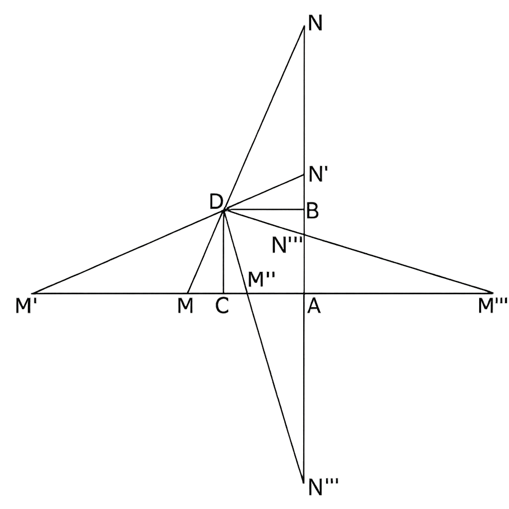
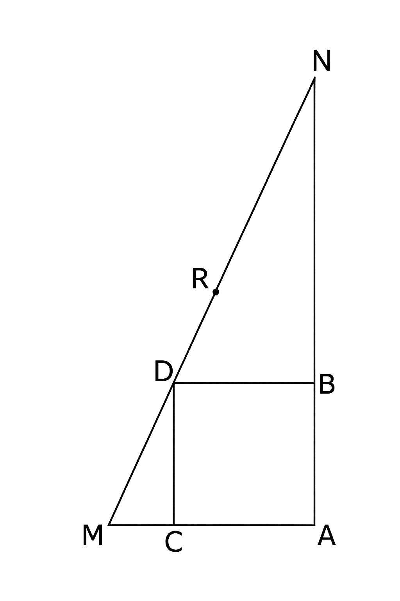

86．これまでに示した既知の主要な方程式解法に関する分析から明らかであるように， それらの方法はすべて，ある共通の一般原理に帰着する．すなわち， 与えられた方程式の根に関する関数を見出すことであり， その関数は次のような性質を備えていなければならない：
1\(^\circ\,\) その関数を根とする方程式（通常「簡約方程式」と呼ばれる）が， 与えられた方程式よりも低い次数であるか， あるいは少なくとも，さらに低い次数の方程式に分解可能であること．
2\(^\circ\,\) その関数から，求める根の値を容易に導出できること．
したがって，方程式を解く技術とは， 上記の性質を備えた根の関数を発見することにほかならない． しかしながら，任意の次数の方程式，すなわち任意の個数の根に対して， そのような関数を常に見出すことが可能であるかどうかは， 一般的に判断するのは非常に困難であるように思われる．
4次を超えない方程式に関しては， その解法を与える最も単純な関数は，次の一般式で表される： \[ x' + y x'' + y^2 x''' + \dots + y^{\mu - 1} x^{(\mu)}. \] ここで，\(x', x'', x''', \dots, x^{(\mu)}\) は与えられた方程式の根であり， その方程式は次数 \(\mu\) をもつと仮定する． また，\(y\) は方程式 \[y^{\mu} - 1 = 0\] の根のうち，1 以外の任意の根， すなわち次の方程式の任意の根である： \[ y^{\mu - 1} + y^{\mu - 2} + y^{\mu - 3} + \dots + 1 = 0. \] これは，はじめの2つの節で示された3次および4次方程式の解法に関する考察から導かれるものである．
これまで考慮してこなかった2次方程式についても，それが同じ原理に関係していることは明らかである． 実際，\(\mu = 2\) とすれば，関数 \(x' + y x''\) が得られる． そして，方程式 \(y + 1 = 0\) は \(y = -1\) を与えるので，この関数は \(x' - x''\) すなわち2つの根の差となる． ところで，2次方程式を解く技術は，第2項を消去して，未知数の2乗の項だけを含む簡約方程式（これは単に平方根の抽出によって解くことができる）を得ることに尽きる． そして，方程式の第2項を消去するには，根を その〔第2項の〕係数の符号を反転させて方程式の次数で割った値――すなわち，すべての根の和を根の個数で割った値――で減じる必要がある． したがって，2次の簡約方程式の根は， 与えられた方程式の根の差を2で割ったものになる． あるいは，簡約方程式の根を1対2の比で増加させる（これは方程式の性質を変えるものではない）とすれば， その差そのものとなる．
以上のことから，任意の次数の方程式もまた， 次の式で表される根をもつ簡約方程式によって解けると帰納的に結論づけることができそうに思える： \[ x' + y x'' + y^2 x''' + y^3 x^{\mathrm{IV}} + \dots. \] しかしながら，第III節で示したオイラー氏およびベズー氏の方法（これらはまさにそのような簡約方程式に直接導く）に関する考察によれば， この結論は，どうやら5次方程式において破綻することが予め明らかであるように思われる． したがって，もし4次を超える方程式の代数的解法が不可能でないとすれば， それは先の式とは異なる根の関数に依存するものでなければならない．
87．これまでは，方程式の解法に関して知られている方法に基づいて， この種の関数をアポステリオリに探求することのみを行ってきたが， 今や，それらをアプリオリに，すなわち方程式の本性から直接導かれる原理以外を仮定せずに どのようにして見出すべきかを示す必要がある． これこそが，私がこの節において主として目指す課題である．
まず，ある次数の方程式の根に関して与えられた任意の関数が どのような方程式に依存すべきか，その次数と性質を決定するための 直接的かつ一般的な規則を提示することにする． この主題はすでに優れた幾何学者たちによって扱われてきたが， ここで我々が採る視点――すなわち方程式の一般的な解法に関する観点――においては， より直接的かつ一般的な方法で取り扱うことが可能であると私は考える．
次に，対象となる方程式が， 与えられた方程式よりも低い次数の方程式の解法のみを仮定することで 根を得ることが可能となるために必要な条件を示す． この機会に，3次および4次方程式の解法に関する真の原理， いわばその形而上学的な構造を提示することにする．
最後に，根の間に特定の関係があることによって より単純な方程式に分解可能な方程式の簡約について 簡潔に述べるとともに， そのような関係をどのように発見し， それによって与えられた方程式の次数を下げることができるかを，いくつかの例証を通じて示すことにする．
88．ここでは有理関数のみを考察することとし，これらの関数を一般に記号 \(f\) によって表すことにする．
したがって，\(f[(x)]\) は \(x\) の任意の有理関数を意味し， \(f[(x)(y)]\) は \(x\) および \(y\) の任意の有理関数を意味し， \(f[(x)(y)(z)]\) は \(x, y, z\) の任意の有理関数を意味し，…等々以下同様．
関数 \(f[(x)(y)]\) において \(y = x\) とすると，それは単なる \(x\) の関数となるが， この関数を \(f[(x)(x)]\) と表す代わりに，簡略のため \(f[(x)^2]\) と表すことにする． 同様に，関数 \(f[(x)(y)(z)]\) において \(y = x\) とすれば， \(x\) および \(z\) の関数となり，これを \(f[(x)^2(z)]\) と表す． さらに，\(x = y = z\) とすれば，それは単なる \(x\) の関数となり， これを \(f[(x)^3]\) と表し，…等々以下同様．
また，たとえば \(x\) および \(y\) の関数であって， \(x\) と \(y\) を入れ替えても不変なもの，すなわち \(f[(x)(y)] = f[(y)(x)]\) となるような関数は，簡略のため \(f[(x, y)]\) と表す． 同様に，\(x, y, z\) の関数であって，それらを任意に入れ替えても不変なものは， \(f[(x, y, z)]\) と表す． したがって，\(f[(x, y)(z)]\) は \(x, y, z\) の有理関数であって，\(z\) をそのままにして \(x\) と \(y\) を入れ替えても不変であるような関数を表し，…等々以下同様．
さらに，\(x, y, z, u\) の関数であって，\(x\) と \(z\) および \(y\) と \(u\) を同時に入れ替えても不変であるものは， \(f[(x)(y),(z)(u)]\) と表す． また，この関数が \(x\) と \(y\)，あるいは \(z\) と \(u\) を単独で入れ替えても不変である場合には， \(f[(x, y),(z, u)]\) と表す．
最後に，同じ変数をもつ複数の関数がある場合， その変数に同じ置換を施したとき，同時に変化するか，あるいは同時に不変であるならば――すなわち，それらが同様の記法で表すことができるならば――それらを類似関数と呼ぶことにする．
たとえば，異なる関数を表す記号として \(f\) および \(\varphi\) を用いるとき， \(f[(x)(y)]\) および \(\varphi[(x)(y)]\) は類似関数であり， \(f[(x, y)]\) および \(\varphi[(x, y)]\) もまた類似関数であり，…等々以下同様．
89．第III節と同様に，与えられた方程式が一般に次の形で表されるとする： \[ x^{\mu} + m x^{\mu - 1} + n x^{\mu - 2} + p x^{\mu - 3} + \dots = 0. \] そして，その\(\mu\)個の根を \(x', x'', x''', x^{\mathrm{IV}}, \dots, x^{(\mu)}\) と記す．
このとき，方程式の性質から次の関係が得られる： \[ \begin{aligned} -m &= x' + x'' + x''' + x^{\mathrm{IV}} + \dots, \\ n &= x' x'' + x' x''' + x'' x''' + x' x^{\mathrm{IV}} + x'' x^{\mathrm{IV}} + x''' x^{\mathrm{IV}} + \dots \\ -p &= x' x'' x''' + x' x'' x^{\mathrm{IV}} + x' x''' x^{\mathrm{IV}} + x'' x''' x^{\mathrm{IV}} + \dots, \\ \dots &\dots\dots\dots\dots\dots\dots\dots\dots\dots\dots\dots\dots\dots\dots\dots\dots\dots \end{aligned} \]
これら，\(x', x'', x''', x^{\mathrm{IV}}, \dots\) によって表される量 \(m, n, p, \dots\) は， いずれも関数 \(f[(x', x'', x''', x^{\mathrm{IV}}, \dots)]\) の形をしていることは明らかであり， したがって，これらの関数はすべて類似関数である． これは方程式の基本的な性質のひとつである．
90．以上を前提として，最も単純な場合から始めるために， 与えられた方程式が2次方程式であると仮定し， 関数 \(f[(x')(x'')]\) を決定するための方程式を求めることにしよう．
ここで，\(t = f[(x')(x'')]\) と置き，\(t\) を求めるべき方程式の未知数とする． また，\(x'\) および \(x''\) はともに次の方程式によって定まるとする： \[ x^2 + m x + n = 0. \] より一般的にするために，\(x'\) の代わりに \(x\) を，\(x''\) の代わりに \(y\) を用いると， 次の方程式が得られる： \[ t - f[(x)(y)] = 0. \] ここから，\(x\) および \(y\) を次の2つの方程式を用いて消去することになる： \[ \begin{aligned} x^2 + m x + n &= 0, \\ y^2 + m y + n &= 0. \end{aligned} \]
次のように置く． \[t - f[(x)(y)] = {X}.\] まず \({X} = 0\) の方程式から \(x^2 + m x + n = 0\) を用いて \(x\) を消去する． これによって得られる方程式を \({Y} = 0\) とすれば， \({Y}\) は \(t, m, n, y\) の有理関数となる． 次に，この方程式から \(y\) を消去するために， もう一方の方程式 \(y^2 + m y + n = 0\) を用いる． これによって最終的な方程式 \({T} = 0\) が得られ， \({T}\) は \(t, m, n\) の有理関数となる．
さて，方程式 \[x^2 + m x + n = 0\] の根が \(x'\) および \(x''\) であることから， \(x\) にそれらの根を代入して得られる \(X\) の値をそれぞれ \(X'\) および \(X''\) とすれば， 第I節第13項で示された結果により，次の関係が成り立つ： \[ Y = X' X''. \] 同様に，\(x'\) および \(x''\) は方程式 \(y^2 + m y + n = 0\) の根でもあるので， \(y\) にそれらを代入して得られる \(Y\) の値をそれぞれ \(Y'\) および \(Y''\) とすれば， \[ T = Y' Y''. \]
ここで， \[ \begin{aligned} X' &= t - f[(x')(y)], \\ X'' &= t - f[(x'')(y)] \end{aligned} \] なので， \[ Y = \big[t - f[(x')(y)]\big] \times \big[t - f[(x'')(y)]\big]. \] これにより， \[ \begin{aligned} Y' &= \big[t - f[(x')(x')]\big] \times \big[t - f[(x'')(x')]\big], \\ Y'' &= \big[t - f[(x')(x'')]\big] \times \big[t - f[(x'')(x'')]\big]. \end{aligned} \] よって， \[ T = \big[t - f[(x')(x'')]\big] \times \big[t - f[(x'')(x')]\big] \times \big[t - f[(x')^2]\big] \times \big[t - f[(x'')^2]\big]. \]
一方，関数 \(f[(x)^2]\) を考え，\(t - f[(x)^2] = \xi\) と置く． この \(\xi = 0\) の方程式から，方程式 \(x^2 + m x + n = 0\) を用いて \(x\) を消去すれば，方程式 \(\theta=0\) を得る．ここで \(\theta\)は \(t, m, n\) の有理関数である． また，\(x\) に \(x'\) および \(x''\) を代入して得られる \(\xi\) の値をそれぞれ \(\xi'\) および \(\xi''\) とすれば， \[ \theta = \xi' \xi''. \]
ここで， \[ \begin{aligned} \xi' &= t - f[(x')^2], \\ \xi'' &= t - f[(x'')^2]. \end{aligned} \] したがって， \[ \theta = \big[t - f[(x')^2]\big] \times \big[t - f[(x'')^2]\big]. \]
次に， \[ \Theta = \big[t - f[(x')(x'')]\big] \times \big[t - f[(x'')(x')]\big] \] とすれば，\(T = \Theta \theta\) となる．したがって，\(\Theta = \frac{T}{\theta}\)． よって，\(T\) および \(\theta\) が \(t, m, n\) の有理関数であることから， \(\Theta\) もまた \(t, m, n\) の有理関数であることは明らかである．
したがって，方程式 \(T = 0\) は \(\theta = 0\) と \(\Theta = 0\) の2つの方程式に分解できる． そして，前者は \(f[(x)^2]\) の値を与える方程式であるから， 与えられた関数 \(f[(x')(x'')]\) の決定は，後者の方程式 \(\Theta = 0\) のみに依存することになる．
ゆえに，この問題の解となる方程式 \(\Theta = 0\) を得るには， \[ \begin{aligned} &t - f[(x)(y)] = 0, \\ &t - f[(x)^2] = 0 \end{aligned} \] から， \[ \begin{aligned} x^2 + m x + n &= 0, \\ y^2 + m y + n &= 0 \end{aligned} \] を用いて未知数 \(x\) および \(y\) を消去すればよい． そして，それぞれの結果を \(T = 0\) および \(\theta = 0\) とすれば， \(\Theta = \frac{T}{\theta}\) が直ちに得られる．
91．\(\Theta\) の式から明らかなように，関数 \(f[(x')(x'')]\) の値を決定するために用いられる方程式 \(\Theta = 0\) は2次方程式であり，その2つの根は \(f[(x')(x'')]\) および \(f[(x'')(x')]\) である． 実際，\(x'\) および \(x''\) はともに方程式 \(x^2 + m x + n = 0\) によって同様に定まるので， 根 \(x', x''\) を入れ替えた違いしかない関数 \(f[(x')(x'')]\) と \(f[(x'')(x')]\) は， 同一の方程式によって決定されるべきであることは明白である．
もし関数 \(f[(x')(x'')]\) が \(f[(x', x'')]\) の形をしているならば， \[f[(x')(x'')] = f[(x'')(x')]\] が成り立つ（第88項）ので，次のようになる： \[ \Theta = \bigl[t - f[(x', x'')]\bigr]^2. \] したがって，方程式 \(\Theta = 0\) は単に次の形になる： \[ t - f[(x', x'')] = 0. \] この場合，問題となっている関数は，1次方程式によって決定されることがわかる． したがって，その値は \(m\) および \(n\) の有理式として与えられることになる．
92．次に，関数 \(f[(x')(x'')(x'')]\) を決定する方程式を求めることにしよう． ここでは，\(x', x'', x'''\) が次の 3次方程式の根であると仮定する： \[ x^3 + m x^2 + n x + p = 0. \]
先ほどと同様に，求めるべき方程式の未知数を \(t\) とし， \(x', x'', x'''\) の代わりに \(x, y, z\) と置くと，次の方程式が得られる： \[ t - f[(x)(y)(z)] = 0. \] ここから，\(x, y, z\) を次の3つの方程式によって順に消去する必要がある： \[ \begin{aligned} x^3 + m x^2 + n x + p &= 0, \\ y^3 + m y^2 + n y + p &= 0, \\ z^3 + m z^2 + n z + p &= 0. \end{aligned} \]
まず， \[t - f[(x)(y)(z)] = X\] とおき，方程式 \(X = 0\) から\(x\)についての方程式を用いて \(x\) を消去すると， 第2の方程式 \(Y = 0\) が得られ，\(Y\) は \(t, y, z\) および係数 \(m, n, p\) の有理関数となる． 次に，この方程式 \(Y = 0\) から\(y\)についての方程式を用いて \(y\) を消去すると， 第3の方程式 \(Z = 0\) が得られ，\(Z\) は \(t, z\) および係数 \(m, n, p\) の有理関数となる． 最後に，方程式 \(Z = 0\) から\(z\)についての方程式を用いて \(z\) を消去すると， 最終的な方程式 \(T = 0\) が得られ，\(T\) は \(t, m, n, p\) の有理関数となる．
さて，\(x\) についての方程式の根が \(x', x'', x'''\) であることから， \(x\) にそれらの根を代入して得られる \(X\) の値をそれぞれ \(X', X'', X'''\) とすれば， 第13項の結果により，次の関係が成り立つ： \[ Y = X' X'' X'''. \] 同様に，\(y\) についての方程式の根も \(x', x'', x'''\) であるから， \(y\) にそれらを代入して得られる \(Y\) の値をそれぞれ \(Y', Y'', Y'''\) とすれば， \[ Z = Y' Y'' Y'''. \] さらに，\(z\) についての方程式も同じ根 \(x', x'', x'''\) をもつので， \(z\) にそれらを代入して得られる \(Z\) の値をそれぞれ \(Z', Z'', Z'''\) とすれば， \[ T = Z' Z'' Z'''. \]
ここで， \begin{align*} &\,X'\,= t-f [(\,x'\,)(y)(z)],\\ &\,X''= t-f [(x''\,)(y) (z)],\\ &X'''= t-f [(x''')(y) (z)]. \end{align*} したがって， \[ Y = \big[t - f[(x')(y)(z)]\big] \times \big[t - f[(x'')(y)(z)]\big] \times \big[t - f[(x''')(y)(z)]\big]. \] これにより， \begin{align*} &\,Y'\, = \bigl[t-f [(x') (\,x'\,) (z)]\bigr] \,\times \bigl[t-f [(x'') (\,x'\,) (z)]\bigr] \times \bigl[t-f [(x''') (\,x'\,) (z)]\bigr],\\ &Y'' \,= \bigl[t-f [(x') (x''\,) (z)]\bigr] \times \bigl[t-f [(x'') (x''\,) (z)]\bigr] \times \bigl[t-f [(x''') (x''\,) (z)]\bigr],\\ &Y''' = \bigl[t-f [(x') (x''') (z)]\bigr] \times \bigl[t-f [(x'') (x''') (z)]\bigr] \times \bigl[t-f [(x''') (x''') (z)]\bigr]. \end{align*} よって， \begin{align*} Z&=\bigl[t-f [(x') (x'') (z)]\bigr] \times\bigl[t-f [(x') (x''') (z)]\bigr] \times\bigl[t-f [(x'') (x''') (z)]\bigr] \\ &\times\bigl[t-f [(x'') (x') (z)]\bigr] \,\times\bigl[t-f [(x''') (x') (z)]\bigr] \times\bigl[t-f [(x''') (x'') (z)]\bigr]\\ &\times\bigl[t-f [(x')^2 (z)]\bigr] \quad\,\,\, \times\bigl[t-f [(x'')^2 (z)]\bigr] \quad\,\,\, \times\bigl[t-f [(x''')^2(z)]\bigr]. \end{align*} よって， \begin{align*} Z'&=\bigl[t-f [(x') (x'') (x')]\bigr] \times\bigl[t-f [(x') (x''') (x')]\bigr] \times\bigl[t-f [(x'') (x''') (x')]\bigr] \\ &\times\bigl[t-f [(x'') (x')^2]\bigr] \quad\,\, \times\bigl[t-f [(x''') (x')^2]\bigr] \quad\, \times\bigl[t-f [(x''') (x'') (x')]\bigr]\\ &\times\bigl[t-f [(x')^3]\bigr] \qquad \quad\, \times\bigl[t-f [(x'')^2 (x')]\bigr] \quad\,\,\, \times\bigl[t-f [(x''')^2(x')]\bigr], \end{align*} \begin{align*} Z''&=\bigl[t-f [(x') (x'')^2]\bigr] \quad\,\, \times\bigl[t-f [(x') (x''') (x'')]\bigr] \times\bigl[t-f [(x'') (x''') (x'')]\bigr] \\ &\times\bigl[t-f [(x'') (x') (x'')]\bigr] \times\bigl[t-f [(x''') (x') (x'')]\bigr] \times\bigl[t-f [(x''') (x'')^2]\bigr]\\ &\times\bigl[t-f [(x')^2 (x'')]\bigr] \quad\,\, \times\bigl[t-f [(x'')^3]\bigr] \qquad\quad\,\, \times\bigl[t-f [(x''')^2(x'')]\bigr], \end{align*} \begin{align*} Z'''&=\!\bigl[t-f [(x') (x'') (x''')]\bigr] \times\bigl[t-f [(x') (x''')^2]\bigr] \quad\,\,\,\,\,\times\bigl[t-f [(x'') (x''')^2]\bigr] \\ &\times\bigl[t-f [(x'') (x') (x''')]\bigr] \times\bigl[t-f [(x''') (x') (x''')]\bigr] \times\bigl[t-f [(x''') (x'') (x''')]\bigr]\\ &\times\bigl[t-f [(x')^2 (x''')]\bigr] \quad\,\, \times\bigl[t-f [(x'')^2 (x''')]\bigr] \quad \,\,\,\times\bigl[t-f [(x''')^3]\bigr]. \end{align*} 最後に，これら3つの量をすべて掛け合わせる．簡略のため， \begin{align*} \Theta&=\bigl[t-f [(x') (x'') (x''')]\bigr] \times\bigl[t-f [(x'')(x') (x''')]\bigr] \times\bigl[t-f [(x''') (x'') (x')]\bigr] \\ &\times\bigl[t-f [(x') (x''') (x'')]\bigr] \times\bigl[t-f [(x''') (x') (x'')]\bigr] \times\bigl[t-f [(x'') (x''') (x')]\bigr],\\[+5pt] \theta\,\,&=\bigl[t-f [(x')^3]\bigr] \qquad\quad\,\, \times\bigl[t-f [(x'')^3]\bigr] \qquad\quad\,\, \times\bigl[t-f [(x''')^3]\bigr],\\[+5pt] \theta_1&=\bigl[t-f [(x')^2 (x'')]\bigr] \quad \,\,\times\bigl[t-f [(x'')^2 (x')]\bigr] \quad\,\,\,\,\, \times\bigl[t-f [(x''')^2 (x'')]\bigr]\\ &\times\bigl[t-f [(x')^2 (x''')]\bigr] \quad\, \times\bigl[t-f [(x''')^2 (x')]\bigr] \quad\,\,\,\, \times\bigl[t-f [(x'')^2 (x''')]\bigr],\\[+5pt] \theta_2&=\bigl[t-f [(x') (x'')^2]\bigr] \quad\, \times\bigl[t-f [(x'') (x')^2]\bigr] \qquad \times\bigl[t-f [(x''') (x'')^2]\bigr] \\ &\times\bigl[t-f [(x') (x''')^2]\bigr] \quad \times\bigl[t-f [(x''') (x')^2]\bigr] \quad\,\,\,\,\, \times\bigl[t-f [(x'') (x''')^2]\bigr], \\[+5pt] \theta_3&=\bigl[t-f [(x') (x'') (x')]\bigr] \times\bigl[t-f [(x'') (x') (x'')]\bigr] \,\,\,\times\bigl[t-f [(x''') (x'') (x''')]\bigr] \\[+5pt] &\times \bigl[t-f [(x') (x''') (x')]\bigr] \times\bigl[t-f [(x''') (x') (x''')]\bigr] \times\bigl[t-f [(x'') (x''') (x'')]\bigr] \end{align*} と書くと，次の式を得る． \[ T = \Theta \theta \theta_1 \theta_2 \theta_3. \]
さて， \[t - f[(x)^3] = 0\] として，\(x\) についての方程式 \[x^3 + m x^2 + n x + p = 0\] を用いて \(x\) を消去すれば， 第91項と同様に最終的な方程式 \(\theta = 0\) が得られる． \(\theta\) は必然的に \(t\) および係数 \(m, n, p\) の有理関数である．
同様の原理によって， \[t - f[(x)^2(y)] = 0\] として， \(x\) および \(y\) を2つの方程式 \[ \begin{aligned} x^3 + m x^2 + n x + p &= 0, \\ y^3 + m y^2 + n y + p &= 0 \end{aligned} \] によって順に消去すれば， 最終的な方程式として \(\theta \theta_1 = 0\) が得られる． したがって，\(\theta \theta_1\) は \(t, m, n, p\) の有理関数である． また，\(\theta\) も同様の有理関数であるから， \(\theta_1\) もまた \(t, m, n, p\) の有理関数であることが導かれる．
同様に， \[t - f[(x)(y)^2] = 0\] として， 先ほどと同じ2つの方程式によって \(x\) および \(y\) を消去すれば， 最終的な方程式として \(\theta \theta_2 = 0\) が得られる． したがって，\(\theta \theta_2\) は \(t, m, n, p\) の有理関数であり， よって \(\theta_2\) もまたそのような関数である．
最後に， \[t - f[(x)(y)(x)] = 0\] として， 同様に \(x\) および \(y\) を消去すれば， 最終的な方程式として \(\theta \theta_3 = 0\) が得られる． したがって，\(\theta \theta_3\) は \(t, m, n, p\) の有理関数であり， よって \(\theta_3\) もまたそのような関数である．
したがって，\(\theta, \theta_1, \theta_2, \theta_3\) の各量は いずれも \(t\) および係数 \(m, n, p\) の有理関数であるから， 次の方程式： \[ T = 0 \quad \text{すなわち} \quad \Theta \theta \theta_1 \theta_2 \theta_3 = 0 \] は，次の方程式に分解される： \[ \theta = 0, \quad \theta_1 = 0, \quad \theta_2 = 0, \quad \theta_3 = 0, \quad \Theta = 0. \] したがって，\(\Theta\) もまた \(t, m, n, p\) の有理関数である．
ところで，方程式 \[\theta = 0,\quad \theta_1 = 0,\quad \theta_2 = 0, \quad\theta_3 = 0\] は，いずれもここでの問題，すなわち，関数 \(f[(x')(x'')(x''')]\) の決定とは無関係であることが容易にわかる． なぜなら，これらの方程式は，\(\theta, \theta_1, \theta_2, \theta_3\) の式から明らかなように， \(x', x'', x'''\) について形の異なる関数を根としているからである． したがって，ここでの問題の解決に真に必要な根をすべて含むのは， ただ1つ，方程式 \(\Theta = 0\) のみである．
93．方程式 \(\Theta = 0\) を求めるには， 次の5つの方程式： \[ \begin{aligned} &t - f[(x)(y)(z)] = 0, \\ &t - f[(x)^2(y)] = 0, \\ &t - f[(x)(y)^2] = 0, \\ &t - f[(x)(y)(x)] = 0, \\ &t - f[(x)^3] = 0 \end{aligned} \] から，未知数 \(x, y, z\) を次の方程式によって消去すればよい： \[ \begin{aligned} x^3 + m x^2 + n x + p &= 0, \\ y^3 + m y^2 + n y + p &= 0, \\ z^3 + m z^2 + n z + p &= 0. \end{aligned} \] そして，得られる最終的な方程式をそれぞれ： \[ T = 0,\quad T_1 = 0,\quad T_2 = 0,\quad T_3 = 0,\quad \theta = 0 \] と表すと，次の関係が成り立つ： \[ T_1 = \theta \theta_1,\quad T_2 = \theta \theta_2,\quad T_3 = \theta \theta_3,\quad T = \Theta \theta \theta_1 \theta_2 \theta_3. \] したがって， \[ \Theta = \frac{T \theta^2}{T_1 T_2 T_3}. \]
この方法は，実際には非常に長く煩雑なものとなり， 方程式の次数が高くなるにつれてますます困難になる． それでも，ここでこの方法を示したのは， 方程式 \(\Theta = 0\) の性質を， 他の一切の外的考察に頼ることなく， 直接的に明らかにできるからである．
94．実際，第92項で与えた\(\Theta=0\) の式から明らかなように， 簡約方程式 \(\Theta = 0\) は 6次となり， その根は次の関数である： \[ \begin{array}{lll} f[(x')(x'')(x''')], & f[(x'')(x')(x''')], & f[(x''')(x'')(x')], \\ f[(x')(x''')(x'')], & f[(x''')(x')(x'')], & f[(x'')(x''')(x')]. \end{array} \] これらはすべて類似した関数であり， \(x', x'', x'''\) の置換によって互いに導かれる． これらの量〔\(x', x'', x'''\)〕はすべて，方程式 \[ x^3 + m x^2 + n x + p = 0 \] によって同様に定まる根であるから， これらの量に関する任意の関数の値を与える方程式は， 根のあらゆる可能な置換によって得られる他の関数の値も同様に与えることは明らかである． この命題はそれ自体で十分に明白であり， 証明を要しないほどであるように思われる． しかしながら， この方程式が，もとの方程式の根の置換から得られる関数以外の根を 含まないこと，言い換えると，この方程式を \[ t - f[(x')(x'')(x''')],\quad t - f[(x'')(x')(x''')], \dots \] という1次因数の積からなると仮定した場合， その各係数が常にもとの方程式の係数 \(m, n, \dots\) の 有理関数として表すことができることについては，それほど自明ではないと私は考える． ところが，この点については，我々の証明によってもはや疑う余地はない． なぜなら，この積に等しい量 \(\Theta\) は， 常に \(t, m, n, \dots\) の有理関数であることが示されているからである．
95．もし与えられた方程式がより高い次数をもち， すなわち \(x', x'', x''', x^{\mathrm{IV}}, \dots\) のように4個以上の根をもつとすれば， 同様にして関数 \(f[(x')(x'')(x''')(x^{\mathrm{IV}})\dots]\) を決定するための方程式 \(\Theta = 0\) を 見出すことができる． そして，量 \(\Theta\) は次のような1次因数の積となることがわかる： \[ \begin{aligned} &t - f[(x')(x'')(x''')(x^{\mathrm{IV}})\dots], \\ &t - f[(x'')(x')(x''')(x^{\mathrm{IV}})\dots], \\ &t - f[(x''')(x'')(x')(x^{\mathrm{IV}})\dots], \\ &t - f[(x'')(x''')(x')(x^{\mathrm{IV}})\dots], \\ &\dots\dots\dots\dots\dots\dots\dots\dots\dots \end{aligned} \] すなわち，\(x', x'', x''', x^{\mathrm{IV}}, \dots\) の根に対して可能な置換（順列）の数だけ因子が存在する． したがって，もし与えられた方程式が次数 \(\mu\) をもつならば， \(\Theta\) の1次因数の数，すなわち方程式 \(\Theta = 0\) の根の数は \(1 \cdot 2 \cdot 3 \cdots \mu\) で与えられる． この数は，\(\mu\) 個の対象に対するすべての置換（順列）の数だからである． そして，この方程式の根は，関数 \(f[(x')(x'')(x''')\dots]\) が 根 \(x', x'', x''', \dots\) の置換によって取り得るあらゆる異なる関数である．
96．さて，これらの異なる関数を順序立てて，かつ1つも漏らすことなく求めるには， まず与えられた関数において \(x''\) と \(x'\) を交換する． これにより2つの関数が得られる． 次に，この2つの関数において \(x'''\) を順次 \(x'\)，\(x''\) と交換すれば， 6つの関数が得られる． さらに，この6つの関数において \(x^{\mathrm{IV}}\) を順次 \(x'\)，\(x''\)，\(x'''\) と交換すれば， 24個の関数が得られる． このようにして，すべての根 \(x', x'', x''', \dots\) を使い尽くすまで続ける．
ここから明らかにわかるのは，異なる関数の数は次のように自然数の積に従って増加するということである： \[ 1,\quad 1 \cdot 2,\quad 1 \cdot 2 \cdot 3,\quad 1 \cdot 2 \cdot 3 \cdot 4,\quad \dots,\quad 1 \cdot 2 \cdot 3 \cdot 4 \cdot 5 \cdots \mu. \]
これらすべての関数を得れば，方程式 \(\Theta = 0\) の根が得られる． したがって，この方程式を \[ t^{\varpi} - M t^{\varpi - 1} + N t^{\varpi - 2} - P t^{\varpi - 3} + \dots = 0 \] と表すとすれば，\(\varpi = 1 \cdot 2 \cdot 3 \cdot 4 \cdots \mu\) であり， 係数 \(M\) は得られたすべての関数の和に等しく， 係数 \(N\) はそれらの関数を2つずつ掛けた積の総和に等しく， 係数 \(P\) はそれらの関数を3つずつ掛けた積の総和に等しく， …等々以下同様である．
そして，既に証明したように，\(\Theta\) の式は必然的に \(t\) および与えられた方程式の係数 \(m, n, p, \dots\) の 有理関数でなければならない．それゆえ， 量 \(M, N, P, \dots\) もまた必然的に \(m, n, p, \dots\) の有理関数であり， これらは，以前の節で行ったように，直接的に求めることが可能である． この点については，すでに引用したクラメール氏の著作に加え， 方程式に関する優れた研究が満載されているウェアリング氏の著作『代数的考察（Meditationes algebraicæ）』も参照されたい．
97．一般に，方程式 \(\Theta = 0\) は次数 \(1 \cdot 2 \cdot 3 \cdots \mu = \varpi\) をもつべきものであり， これは \(\mu\) 個の根 \(x', x'', x''', \dots\) に対して可能な置換（順列）の数に等しい． しかし，もし関数がそのような置換のいくつかに対して何ら変化を受けないようなものであるならば， 問題となる方程式の次数は必然的に低下することになる．
たとえば，関数 \(f[(x')(x'')(x''')(x^{\mathrm{IV}})\dots]\) が \(x'\) を \(x''\) に，\(x''\) を \(x'''\) に，\(x'''\) を \(x'\) に置き換えても値を保つようなものであると仮定すると \[ f[(x')(x'')(x''')(x^{\mathrm{IV}})\dots] = f[(x'')(x''')(x')(x^{\mathrm{IV}})\dots] \] となる．このとき，方程式 \(\Theta = 0\) はすでに2つの等しい根をもつことが明らかである． しかし，この仮定のもとでは，他のすべての根もまた2つずつ等しくなることを証明できる． 実際，この方程式の任意の根を考え，それが関数 \[ f[(x^{\mathrm{IV}})(x''')(x')(x'')\dots] \] によって表されるとする．この関数は， \[ f[(x')(x'')(x''')(x^{\mathrm{IV}})\dots] \] から，\(x'\) を \(x^{\mathrm{IV}}\) に，\(x''\) を \(x'''\) に，\(x'''\) を \(x'\) に，\(x^{\mathrm{IV}}\) を \(x''\) に置き換えることによって導かれる． したがって，この関数もまた\(x^{\mathrm{IV}}\) を \(x'''\) に，\(x'''\) を \(x'\) に，\(x'\) を \(x^{\mathrm{IV}}\) に置き換えることによって値を保つはずである． よって次の関係が得られる： \[ f[(x^{\mathrm{IV}})(x''')(x')(x'')\dots] = f[(x''')(x')(x^{\mathrm{IV}})(x'')\dots]. \] したがってこの場合，量 \(\Theta\) は平方 \(\theta^2\) に等しくなり， 方程式 \(\Theta = 0\) は\(\theta = 0\)に簡約される． その次数は \(\frac{\varpi}{2}\) となる[*1]
．同様にして，関数 \(f[(x')(x'')(x''')(x^{\mathrm{IV}})\dots]\) が 2つ，3つ[*2]，あるいはそれ以上の異なる置換に対して値を保つような性質をもつならば， 方程式 \(\Theta = 0\) の根は3つずつ，4つずつ，…等々が等しくなり， 量 \(\Theta\) は立方 \(\theta^3\)，4乗 \(\theta^4\)，…等々になり， したがって方程式 \(\Theta = 0\) は\(\theta=0\)に簡約され， その次数は \(\frac{\varpi}{3}\)，\(\frac{\varpi}{4}\)，…等々となる．
98．したがって，関数が \[ f[(x', x'')(x''')(x^{\mathrm{IV}})\dots] \] の形であり，\(x'\) と \(x''\) を交換しても値が変わらない性質をもつならば（第88項）， 方程式 \(\Theta = 0\) のすべての根は2つずつ等しくなる． よってこの方程式の次数は\(\frac{1 \cdot 2 \cdot 3 \cdots \mu}{2}\)に下がる．
同様に，関数 \[ f[(x', x'', x''')(x^{\mathrm{IV}})(x^{\mathrm{V}})\dots] \] が，\(x', x'', x'''\) の3つの根の間にどのような置換を施しても値を保つならば， 方程式 \(\Theta = 0\) のすべての根は \(1 \cdot 2 \cdot 3\) 個ずつ等しくなり， 方程式の次数は\(\frac{1 \cdot 2 \cdot 3 \cdots \mu}{1 \cdot 2 \cdot 3}\)に下がる．
また，関数 \[ f[(x', x'')(x''', x^{\mathrm{IV}})(x^{\mathrm{V}})\dots] \] が，\(x', x''\) の2つの根の間，および \(x''', x^{\mathrm{IV}}\) の2つの根の間に どのような置換を施しても値を保つならば， 方程式 \(\Theta = 0\) の根はすべて \(1 \cdot 2 \times 1 \cdot 2\) 個ずつ等しくなり， 方程式の次数は\(\frac{1 \cdot 2 \cdot 3 \cdots \mu}{1 \cdot 2 \times 1 \cdot 2}\)に下がる．
一般に，関数 \[ f\left[ (x', x'', x''', \dots, x^{(\alpha)}) (x^{(\alpha+1)}, x^{(\alpha+2)}, x^{(\alpha+3)}, \dots, x^{(\alpha+\beta)}) (x^{(\alpha+\beta+1)}, \dots) \dots \right] \] が与えられたとき，方程式 \(\Theta = 0\) における量 \(\Theta\) は \(1 \cdot 2 \cdot 3 \cdots \alpha \times 1 \cdot 2 \cdot 3 \cdots \beta \times 1 \cdot 2 \cdot 3 \cdots\)を指数とする冪になる． したがって，方程式の次数は\(\frac{1 \cdot 2 \cdot 3 \cdot 4 \cdots \mu}{1 \cdot 2 \cdot 3 \cdots \alpha \times 1 \cdot 2 \cdot 3 \cdots \beta \times 1 \cdot 2 \cdot 3 \cdots}\)に下がる．
このことから，根 \(x', x'', x''', \dots, x^{(\mu)}\) の間にどのような置換を施しても値を保つ性質をもつ関数 \[ f[(x', x'', x''', \dots, x^{(\mu)})] \] は，次数\(\frac{1 \cdot 2 \cdot 3 \cdots \mu}{1 \cdot 2 \cdot 3 \cdots \mu} = 1\) の方程式にのみ依存する． すなわち，1次方程式に依存する． したがって，その関数は与えられた方程式の係数 \(m, n, p, \dots\) によって 代数的かつ有理的に決定される． この定理は，これまでの節において自明としてきたが， その厳密な証明は，今まさに確立された原理に依拠しているのである．
これらのことから次のように結論することもできる． すなわち，\(\mu\) 個の根 \(x', x'', x''', \dots\) のうち， \(\lambda\) 個の根のみを含む任意の関数 \[ f[(x')(x'')(x''')\dots(x^{(\lambda)})] \] は，次数\(\frac{1 \cdot 2 \cdot 3 \cdot 4 \cdots \mu}{1 \cdot 2 \cdot 3 \cdots (\mu - \lambda)}\)の方程式を導くことになる． というのも，この関数は \[ f[(x')(x'')(x''')\dots(x^{(\lambda)})(x^{(\lambda+1)}, x^{(\lambda+2)}, x^{(\lambda+3)}, \dots, x^{(\mu)})] \] の形と見なすことができるからである． ここで，\(x^{(\lambda+1)}, x^{(\lambda+2)}, \dots, x^{(\mu)}\) については， 係数がゼロであるか，または指数がゼロであるものとする（これは許されることである）．
したがって，関数 \[ f[(x', x'')(x''', x^{\mathrm{IV}}, x^{\mathrm{V}}, \dots, x^{(\lambda)})]\,\,^{\text{[*1]}} \] は，次数\(\frac{1 \cdot 2 \cdot 3 \cdots \mu}{1 \cdot 2 \times 1 \cdot 2 \cdot 3 \cdots (\mu - \lambda)}\)の方程式を導くことになる…等々．
また，関数 \[ f[(x', x'', x''', \dots, x^{(\lambda)})] \] は，次数 \[ \frac{1 \cdot 2 \cdot 3 \cdots \mu}{1 \cdot 2 \cdot 3 \cdots \lambda \times 1 \cdot 2 \cdot 3 \cdots (\mu - \lambda)} = \frac{\mu (\mu - 1)(\mu - 2) \cdots (\mu - \lambda + 1)}{1 \cdot 2 \cdot 3 \cdots \lambda} \] の方程式を導く．
それゆえ，一般に，\(\mu\) 次の与えられた方程式を より次数の低い\(\lambda\)次の方程式 \[ x^{\lambda} + a x^{(\lambda - 1)} + b x^{(\lambda - 2)} + \dots = 0 \] にして，そのすべての根がもとの方程式と共通であるように，すなわち，\(x', x'', x''', \dots, x^{(\lambda)}\) であるようにしたいなら， 各係数 \(a, b, c, \dots\) を決定するためには，次数 \[ \frac{\mu (\mu - 1)(\mu - 2) \cdots (\mu - \lambda + 1)}{1 \cdot 2 \cdot 3 \cdots \lambda} \] の方程式に必然的に到達することになる． というのも，第89項で指摘したように，これらの係数は必然的に \[ f[(x', x'', x''', \dots, x^{(\lambda)})] \] の形の関数であるからである． この命題は以前から知られていたが， 私の知る限りでは，これまで厳密に証明されたことはなかったように思われる．
ところで，\(\lambda\) を \(\mu\) より小さく取ると， 上記の数 \[ \frac{\mu (\mu - 1)(\mu - 2) \cdots (\mu - \lambda + 1)}{1 \cdot 2 \cdot 3 \cdots \lambda} \] が \(\mu\) より小さくなることは決してない． したがって，この種の簡約によって 方程式の一般的な解法に何らかの期待をかけることはできない．
99．これまでに示したすべてのことから，次の一般的な結論が導かれる．
1\(^\circ\,\) 同一の方程式の根 \(x', x'', x''', \dots\) についてのすべての類似関数は， 必然的に同一の次数の方程式によって与えられる．
2\(^\circ\,\) その次数は常に \(1 \cdot 2 \cdot 3 \cdots \mu\) に等しいか， この数の約数である（\(\mu\) は与えられた方程式の次数）．
3\(^\circ\,\) \(x', x'', x''', \dots\) の任意の与えられた関数を決定するための 最も簡単な方程式 \(\theta = 0\) を直接求めるには，その関数が \(x', x'', x''', \dots\) の置換によって取り得るすべての異なる値を列挙し，それらの値を求めるべき方程式の根と見なす． そして，それらの値を用いて，すでに本論文の中で何度も使われているよく知られた諸方法によって，この方程式の係数を決定すればよい．
100．さて，方程式 \(\theta = 0\) を解くことによって，あるいは他の方法によって， 根 \(x', x'', x''', \dots\) についてのある関数の値が得られたとすれば， 同じ根についての別のいかなる関数の値もまた求めることができると私は主張する． しかも，一般的には単に 1 次方程式を解くことよってそれは可能であり， 2 次，3 次など方程式を必要とするのはごく特殊な場合に限られる． この問題は，方程式論において最も重要なものの1つであると私は考えており， これから提示する一般的な解法は，代数学のこの領域に新たな光を投げかけることになるだろう．
簡単のために，ここでは与えられた2つの関数（そのうち一方の値は既知で他方は未知）を 第 88 項で定義した意味において類似であると仮定する． この 2つの関数のうち，最初のものを一般に \(t\)， 2 番目のものを \(y\) と表すことにする． さらに，根 \(x', x'', x''', \dots\) のあらゆる可能な置換から得られる異なる\(t\) の値を， \(t', t'', t''', \dots, t^{(\varpi)}\) と表す． 同様に，関数 \(y\) の異なる値も同じ置換から得られるので， それらを \(y', y'', y''', \dots, y^{(\varpi)}\) と表す． 関数 \(t\) と \(y\) が類似であると仮定しているので， \(x', x'', x''', \dots\) のあらゆる可能な置換によって得られる異なる値の数は両者で同じであり， それらの値は両関数において同じ置換に対応する．
したがって，\(t', t'', t''', \dots, t^{(\varpi)}\) は \(t\) についての方程式の根であり， この方程式は次数 \(\varpi\) をもつ． また，\(y', y'', y''', \dots, y^{(\varpi)}\) も \(y\) についての方程式の根であり， この方程式も同じ次数をもつ． \(t\)についての方程式も\(y\)につての方程式も，上で述べた方法によって求めることができるが， ここでは \(t\) についての方程式のみを用いることにする． この方程式は一般に次のように表される： \[ 1 + A t + B t^2 + C t^3 + \dots + K t^{\varpi} = 0. \] あるいは，次のように置いて，より簡潔に \(\theta = 0\) と表す： \[ \theta = 1 + A t + B t^2 + C t^3 + \dots + K t^{\varpi}. \] ここで，係数 \(A, B, C, \dots\) は， \(x', x'', x''', \dots\)を根として持つ与えられた方程式の係数 \(m, n, p, \dots\) の既知の関数である．
この前提のもとで，一般に関数 \(t^{\lambda} y\) を考えると， 根 \(x', x'', x''', \dots\) のあらゆる可能な置換から得られるこの関数の値は， \(t'^{\lambda} y',\,\, t''^{\lambda} y'',\,\, t'''^{\lambda} y''',\dots,\,\, t^{(\varpi)\lambda} y^{(\varpi)}\) となる． これらの値の総和を取れば，次の関数が得られる： \[ t'^{\lambda} y' + t''^{\lambda} y'' + t'''^{\lambda} y''' + \dots + t^{(\varpi)\lambda} y^{(\varpi)}. \] この関数は，根 \(x', x'', x''', \dots\) のどのような置換によっても不変であるという性質をもち， したがって，係数 \(m, n, p, \dots\) によって代数的かつ有理的に表すことができる（第 98 項）．
したがって，この関数の値を，指数 \(\lambda = 0, 1, 2, 3, \dots, \varpi - 1\) に対して算出し， それらを \(M, M_1, M_2, M_3, \dots, M_{(\varpi - 1)}\) と置けば， 次の \(\varpi\) 個の方程式が得られる： \begin{align*} &y'+y''+y'''+\dots+y^{(\varpi)}=M,\\ &t'\,\,y'\,+\,t''\,\,y''+ \,t'''\,\,y'''+\dots+ \,t^{(\varpi)}\,\,y^{(\varpi)}=M_1,\\ &t^{\prime \,2}y'+t^{\prime\prime \,2}y''+ t^{\prime\prime\prime \,2}y'''+\dots+ t^{(\varpi)2}y^{(\varpi)}=M_2,\\ &t^{\prime \,3}y'+t^{\prime\prime \,3}y''+ t^{\prime\prime\prime \,3}y'''+\dots+ t^{(\varpi)3}y^{(\varpi)}=M_3,\\ &\dots\dots\dots\dots\dots\dots\dots\dots\dots\dots\dots\dots\dots\dots\dots,\\ &t^{\prime \,\varpi-1}y'+t^{\prime\prime \,\varpi-1}y''+ t^{\prime\prime\prime \,\varpi-1}y'''+\dots+ t^{(\varpi)\,\varpi-1}y^{(\varpi)}=M_{(\varpi-1)}. \end{align*} ここで，\(M, M_1, M_2, \dots, M_{(\varpi - 1)}\) は，係数 \(m, n, p, \dots\) から定まる既知の量である．
今やるべきことは，これらの \(\varpi\) 個の方程式から消去法によって， 未知数 \(y', y'', y''', \dots, y^{(\varpi)}\) の値を求めることである． しかし，もし通常の方法に従えば，極めて複雑な式に陥ることになり， しかもすべての量 \(t', t'', t''', \dots\) が混然と入り込んでしまうという不都合が生じる． ゆえに別の方法を用いる必要があり， 私には以下の方法が最も適しているように思われる．
\(\varpi - 1\) 個の未定量を取り，それらを \(N_1, N_2, N_3, \dots, N_{(\varpi - 1)}\) と表す． 最初の方程式を除くすべての方程式に，これらを順次掛け合わせ， それらをすべて加えると，次の1つの方程式が得られる： \begin{align*} &\quad\, M+M_1N_1\,+M_2\,N_2\,\,\,+M_3\,N_3\,\,\,+\dots+M_{(\varpi-1)}N_{(\varpi-1)}\\ &=(1+N_1\,t'\,\,\,\,\,+N_2\,t^{\prime\,2}\,\,\,\,+N_3\,\,t^{\prime\,3}\,\,\,\,+\dots+N_{(\varpi-1)}t^{\prime\,\varpi-1})\,y'\\ &+(1+N_1\,t''\,\,\,\,+N_2\,t^{\prime\prime\,2}\,\,\,+N_3\,t^{\prime\prime\,3}\,\,\,+\dots+N_{(\varpi-1)}t^{\prime\prime\,\varpi-1})\,y''\\ &+(1+N_1\,t'''\,\,\,+N_2\,t^{\prime\prime\prime\,2}\,+N_3\,t^{\prime\prime\prime\,3}\,\,+\dots+N_{(\varpi-1)}t^{\prime\prime\prime\,\varpi-1})y'''\\ &\dots\dots\dots\dots\dots\dots\dots\dots\dots\dots\dots\dots\dots\dots\dots\dots\dots\dots\dots\dots\\ &+(1+N_1t^{(\varpi)}+N_2t^{(\varpi)2}+N_3t^{(\varpi)3}+\dots+N_{(\varpi-1)}t^{(\varpi)\varpi-1})y^{(\varpi)}. \end{align*}
一般に，次のように置く： \[ T = 1 + N_1 t + N_2 t^2 + N_3 t^3 + \dots + N_{(\varpi - 1)} t^{\varpi - 1}. \] そして，\(t = t', t'', t''', \dots, t^{(\varpi)}\) を代入して得られる \(T\) の値を それぞれ \(T', T'', T''', \dots, T^{(\varpi)}\) 置けば，上式は次の極めて簡潔な形に帰着する： \[ T' y' + T'' y'' + T''' y''' + \dots + T^{(\varpi)} y^{(\varpi)} = M + M_1 N_1 + M_2 N_2 + M_3 N_3 + \dots + M_{(\varpi - 1)} N_{(\varpi - 1)}. \]
さて，未知数 \(y', y'', y''', \dots\) のうち任意の1つ，たとえば \(y^{(\rho)}\) の値を求めるには， 他の未知数の係数をすべて 0 にすればよい． これにより，直ちに次の式が得られる： \[ y^{(\rho)} = \frac{M + M_1 N_1 + M_2 N_2 + M_3 N_3 + \dots + M_{(\varpi - 1)} N_{(\varpi - 1)}}{T^{(\rho)}}. \] そして，方程式： \[ T' = 0,\quad T'' = 0,\quad T''' = 0, \dots,\quad T^{(\varpi)} = 0 \] （ただし \(T^{(\rho)} = 0\) は除く）は，未定量 \(N_1, N_2, N_3, \dots, N_{(\varpi - 1)}\) を 決定するために用いられる．
さて，これらの個別の方程式がすべて同時に成立するためには， 一般方程式 \(T = 0\) の根が \(t', t'', t''', \dots, t^{(\varpi)}\) （ただし \(t^{(\rho)}\) は除く）でなくてはならないことは明らかである． したがって，多項式 \(T\)（その定数項は 1 である） に因子 \(1 - \frac{t}{t^{(\rho)}}\) を掛ければ， 得られる多項式 \(T \left(1 - \frac{t}{t^{(\rho)}}\right)\) は \(t', t'', t''', \dots, t^{(\varpi)}\) のすべてを根にもつことになる． しかし，これらの根はすでに方程式 \(\theta = 0\) の根でもある． しかも，\(T \left(1 - \frac{t}{t^{(\rho)}}\right)\) と \(\theta\) の定数項はいずれも 1 であるから， 次の式が成立する： \[ T \left(1 - \dfrac{t}{t^{(\rho)}}\right) = \theta, \] すなわち， \[ 1 + \left(N_1 - \dfrac{1}{t^{(\rho)}}\right)t + \left(N_2 - \dfrac{N_1}{t^{(\rho)}}\right)t^2 + \left(N_3 - \dfrac{N_2}{t^{(\rho)}}\right)t^3 + \dots = 1 + A t + B t^2 + C t^3 + \dots. \] この式から次の関係が導かれる： \[N_1 - \dfrac{1}{t^{(\rho)}} = A, \quad N_2 - \dfrac{N_1}{t^{(\rho)}} = B, \quad N_3 - \dfrac{N_2}{t^{(\rho)}} = C, \dots.\] よって，次のように順次求められる： \[ \begin{aligned} &N_1 = A + \dfrac{1}{t^{(\rho)}}, \\ &N_2 = B + \dfrac{A}{t^{(\rho)}} + \dfrac{1}{t^{(\rho)2}}, \\ &N_3 = C + \dfrac{B}{t^{(\rho)}} + \dfrac{A}{t^{(\rho)2}} + \dfrac{1}{t^{(\rho)3}}, \\ &\dots\dots\dots\dots\dots\dots\dots\dots\dots\dots \end{aligned} \]
次に，量 \(T^{(\rho)}\) の値を求めるには， 一般に次の関係があることに注目する： \[ T = \dfrac{\theta}{1 - \dfrac{t}{t^{(\rho)}}}. \] この式に \(t = t^{(\rho)}\) を代入すればよい． しかし，この代入によって分子 \(\theta\) も分母 \(1 - \frac{t}{t^{(\rho)}}\) もともに 0 になるため， 既知の規則に従って，それぞれの差分[*1]を用いる必要がある． すなわち，\(t\) を変数とみなして比 \(- \frac{d\theta}{dt} : \frac{1}{t^{(\rho)}}\) を取る． したがって，\(T^{(\rho)}\) の値は，\(-t \frac{d\theta}{dt}\) に \(t = t^{(\rho)}\) を代入したものとなる： \[ T^{(\rho)} = \left(-t \dfrac{d\theta}{dt}\right)^{(\rho)}, \] または，\(\theta\) の具体的な形を代入して微分した後，\(t\) を \(t^{(\rho)}\) に置き換えると： \[ T^{(\rho)} = -A t^{(\rho)} - 2 B t^{(\rho)2} - 3 C t^{(\rho)3} - \dots. \]
したがって，この \(T^{(\rho)}\) の値と，先に求めた \(N_1, N_2, N_3, \dots\) を 上に記した \(y^{(\rho)}\)の一般式に代入すれば，関数 \(y^{(\rho)}\) の値が得られ， これは，対応する関数 \(t^{(\rho)}\) と，方程式の係数 \(m, n, p, \dots\) のみで表されている．
したがって，問題の核心は，方程式 \[ 1 + A t + B t^2 + C t^3 + \dots = 0 \] の係数 \(A, B, C, \dots\) と，量 \(M, M_1, M_2, M_3, \dots\) を求めることにある． これらは，既に見てきたようにさまざまな方法で求めることができるが， 重要なのは，これらの量がすべて与えられた方程式の係数 \(m, n, p, \dots\) のみで 代数的に表されるという点である．これはすでに厳密に証明済みである．
これらの量が求まったならば，簡略化のために次のように置く： \[ \begin{aligned} &P = M + A M_1 + B M_2 + C M_3 + \dots, \\ &Q = M_1 + A M_2 + B M_3 + \dots, \\ &R = M_2 + A M_3 + \dots, \\ &\dots\dots\dots\dots\dots\dots\dots \end{aligned} \] すると，任意の \(y\) の値は次のように表される： \[ y = -\dfrac{\dfrac{P}{t} + \dfrac{Q}{t^2} + \dfrac{R}{t^3} + \dfrac{S}{t^4} + \dots}{A + 2 B t + 3 C t^2 + 4 D t^3 + \dots}. \] ここで，関数\(t\) は関数 \(y\) に対応するもの[*2]とする．
101．この解法は，\(t\) の与えられた値が分母 \[ A + 2 B t + 3 C t^2 + \dots = \dfrac{d\theta}{dt} \] を 0 にしない限り，常に有効であることは明らかである． ところが，\(t\) はもともと方程式 \(\theta = 0\) の根であるから， \(\frac{d\theta}{dt} = 0\) となるのは，この値が方程式 \(\theta = 0\) の重根である場合に限られる．
この場合に何が起こるかを解明するため，\(t'\) が与えられた \(t\) の値であり， それに対応する \(y\) の値が \(y'\) であると仮定する． そして，値の列 \(t', t'', t''', \dots, t^{(\varpi)}\) の中に， \(t'' = t'\) となるものが含まれている，すなわち与えられた値 \(t'\) は方程式 \(\theta = 0\) の重根であるとする． まず，\(t'\) と \(t''\) を異なるものとして考えると，次のようになる： \[ \begin{aligned} y' &= -\frac{\dfrac{P}{t'} + \dfrac{Q}{t'^2} + \dfrac{R}{t'^3} + \dots}{A + 2 B t' + 3 C t'^2 + 4 D t'^3 + \dots}, \\[+3pt] y'' &= -\frac{\dfrac{P}{t''} + \dfrac{Q}{t''^2} + \dfrac{R}{t''^3} + \dots}{A + 2 B t'' + 3 C t''^2 + 4 D t''^3 + \dots}. \end{aligned} \] また， \[ 1 + A t + B t^2 + C t^3 + \dots = \theta = \left(1 - \dfrac{t}{t'}\right)\left(1 - \dfrac{t}{t''}\right)\left(1 - \dfrac{t}{t'''}\right)\dots \] であるから，これを微分し，\(t = t'\) および \(t = t''\) を代入すると： \begin{align*} A+2Bt'\,+3C\,t'^2\,+\dots&=-\frac{1}{t'}\left(1-\frac{t'}{t''}\right)\left(1-\frac{t'}{t'''}\right)\left(1-\frac{t'}{t^{\mathrm{IV}}}\right)\dots,\\[+3pt] A+2Bt''+3Ct''^2+\dots&=-\frac{1}{t''}\left(1-\frac{t''}{t'}\right)\left(1-\frac{t''}{t'''}\right)\left(1-\frac{t''}{t^{\mathrm{IV}}}\right)\dots. \end{align*} ここから，\(t' = t''\) の場合には，これらの量が 0 になることがわかる．
さて，\(t'' = t' + \omega\) と仮定し，\(\omega\) を無限小量とする． 2次以上の無限小を無視すれば，次のようになる： \begin{align*} A+2Bt'\,+3C\,t'^2\,+\dots&=-\frac{\omega}{t^{\prime\,2}}\left(1-\frac{t'}{t'''}\right)\left(1-\frac{t'}{t^{\mathrm{IV}}}\right)\dots,\\[+3pt] A+2Bt''+3Ct''^2+\dots&=+\frac{\omega}{t'^2}\left(1-\frac{t'}{t'''}\right)\left(1-\frac{t'}{t^{\mathrm{IV}}}\right)\dots. \end{align*} 簡略のために次のように置く： \[ \Pi = \dfrac{1}{t'^2} \left(1 - \dfrac{t'}{t'''}\right)\left(1 - \dfrac{t'}{t^{\mathrm{IV}}}\right)\dots. \] このとき， \[ y' = \dfrac{\dfrac{P}{t'} + \dfrac{Q}{t'^2} + \dfrac{R}{t'^3} + \dots}{\omega \Pi},\quad y'' = -\dfrac{\dfrac{P}{t''} + \dfrac{Q}{t''^2} + \dfrac{R}{t''^3} + \dots}{\omega \Pi} \] ただし， \[ \begin{aligned} \dfrac{P}{t''} + \dfrac{Q}{t''^2} + \dfrac{R}{t''^3} + \dots &= \dfrac{P}{t'} + \dfrac{Q}{t'^2} + \dfrac{R}{t'^3} + \dots + \omega \frac{d\left(\dfrac{P}{t'} + \dfrac{Q}{t'^2} + \dfrac{R}{t'^3} + \dots\right)}{dt'} \\[+3pt] &= \dfrac{P}{t'} + \dfrac{Q}{t'^2} + \dfrac{R}{t'^3} + \dots - \omega \left(\dfrac{P}{t'^2} + \dfrac{2 Q}{t'^3} + \dfrac{3 R}{t'^4} + \dots\right). \end{aligned} \] よって， \[ y'' = -y' + \dfrac{\dfrac{P}{t'^2} + \dfrac{2 Q}{t'^3} + \dfrac{3 R}{t'^4} + \dots}{\Pi}. \] したがって， \[ y' + y'' = \dfrac{\dfrac{P}{t'^2} + \dfrac{2 Q}{t'^3} + \dfrac{3 R}{t'^4} + \dots}{\Pi}. \]
また， \[ \theta = \left(1 - \dfrac{t}{t'}\right)\left(1 - \dfrac{t}{t''}\right)\left(1 - \dfrac{t}{t'''}\right)\left(1 - \dfrac{t}{t^{\mathrm{IV}}}\right)\dots = \left(1 - \dfrac{t}{t'}\right)^2 \left(1 - \dfrac{t}{t'''}\right) \left(1 - \dfrac{t}{t^{\mathrm{IV}}}\right) \dots \] であるから，\(t = t'\) のとき， \[ \dfrac{1}{2} \dfrac{d^2 \theta}{dt^2} = \dfrac{1}{t'^2} \left(1 - \dfrac{t'}{t'''}\right)\left(1 - \dfrac{t'}{t^{\mathrm{IV}}}\right)\dots = \Pi. \] したがって， \[ \Pi = \dfrac{2 B + 2 \cdot 3 C t' + 3 \cdot 4 D t'^2 + \dots}{2}. \] よって， \[ \dfrac{y' + y''}{2} = \dfrac{\dfrac{P}{t'^2} + \dfrac{2 Q}{t'^3} + \dfrac{3 R}{t'^4} + \dots}{2 B + 2 \cdot 3 C t' + 3 \cdot 4 D t'^2 + \dots}. \]
したがって，この場合，この計算式は等しい根 \(t', t''\) に対応する未知数 \(y', y''\) のそれぞれの値を与えるのではなく， その和 \(y' + y''\) の値のみを与えることになる． そして，この和の半分の値は，第100項の一般式において，分子と分母の微分[*1]をそれぞれ\(dt\) で割ったものから得られる．
同様にして，\(t\) の与えられた値が方程式 \(\theta = 0\) の3重根である場合， たとえば \(t' = t'' = t'''\) のときには，対応する関数 \(y', y'', y'''\) の個別の値は得られず， その和 \(y' + y'' + y'''\) のみが得られる． そして，関数 \(y\) の一般式は，この和の 3 分の 1 の値を与えることになり， その際には，分子と分母のそれぞれの 2 階微分を \(dt^2\) で割ったものを用いる…等々 〔さらなる高重複の根に対しても〕以下同様である．
102．一般に，第101項[*1]の \(y\) の一般式の分母に既知の値 \(t\) を代入して， その分母が 0 になるときは，その分母が同じ代入によって 0 にならなくなるのに必要な回数だけ微分する． このとき，1次微分 \(dt\) は定数として扱う[*2]． 次に，同じ回数だけ分子も微分する． このようにして得られる新しい分数は，微分の回数に 1 を加えた個数と同数の \(y\) の特定値の和を表すことになり， それは，和を \(y\) の値の個数で割ったものになる． そして，それらの値は，重複する \(t\) の値に対応するものであり， その個数は，\(\theta\) を繰り返し微分して 0 になり続ける回数に 1 を加えたものに等しい．
このようにして \(y\) の異なる値の和を知ることができる． さらに，同様の方法で，それらの値の平方の和，立方の和なども求めることができる． そのためには，関数 \(y\) の代わりにその平方 \(y^2\)，次に立方 \(y^3\) …等々を用いて 新たな計算を行えばよい． そこから，既知の公式によって，\(y\) の値の2つずつ，3つずつ，…等々の積[*3]の値を導くことができる． したがって，それらの値を根にもつ方程式のすべての係数が得られる． そして，この方程式を解くことによって，それぞれの値を個別に求めることができる．
このことから次のように結論される： 関数 \(t\) の値 \(t', t'', t''', \dots\) の中に，互いに等しいものが2つ以上存在する場合， それらの重複する \(t\) に対応する \(y\) の値 \(y', y'', y''', \dots\) は， 単に \(t\) と係数 \(m, n, p, \dots\) の有理関数として与えることはできない． それらは，重複する値の個数に等しい次数の方程式によって与えられ， そのすべての係数は，\(t\) および \(m, n, p, \dots\) に関する有理式で表される．
これはまた，解析の原理に照らしても自然なことである． すなわち，\(t\) の同じ値に対応する複数の \(y\) の値が存在する以上， それらの \(y\) の値は，対応する \(t\) の値に対して同じように依存することになり， したがって，それらの値は，同じ方程式の根であるほかない． その方程式の係数は，\(t\) に関する有理式によって与えられる．
たとえば，任意の次数 \(\mu\) の方程式 \[ x^{\mu} + m x^{\mu - 1} + n x^{\mu - 2} + p x^{\mu - 3} + \dots = 0 \] が与えられており，より低い次数 \(\lambda\) の方程式 \[ x^{\lambda} + a x^{\lambda - 1} + b x^{\lambda - 2} + c x^{\lambda - 3} + \dots = 0 \] で，そのすべての根がもとの方程式と共通であるものを見つけたいとする．すなわち，この式が前者の約数であるような場合である． このとき，係数 \(a, b, c, \dots\) は，もとの方程式の根についての類似関数であり， それらは次の個数の変化を受ける： \[ \frac{\mu (\mu - 1)(\mu - 2) \dots (\mu - \lambda + 1)}{1 \cdot 2 \cdot 3 \cdots \lambda}. \] したがって，これらの各係数は，\(m, n, p, \dots\) に関して， この数と同じ次数の方程式によって与えられることになる（第 89 項および第 98 項）． さて，これらの係数のうちいずれか 1つの値が既知であれば， 先ほど解決した問題を用いて，他のすべての係数の値を求めることができる． そして，この解法から次のことが導かれる： その既知の係数の値が，その係数を決定する方程式の単根であるならば， 他のすべての係数は，その既知の係数によって有理的に表すことができる． しかし，既知の係数の値がその方程式の 2重根，3重根，…等々であるならば， 他の各係数は，その既知の係数によって，それぞれ 2 次，3 次，…等々の方程式によってのみ与えられることになる．
このことをアポステリオリに確認するために，次の 4 次方程式を考えよう： \[ x^4 + m x^3 + n x^2 + p x + q = 0. \] そして，第 35 項（第II節）と同様に，この方程式が次の 2 次方程式で割り切れると仮定する： \[ x^2 + f x + g = 0. \] すでに見たように，次の2つの条件式が得られる： \begin{gather*} p - g(m - f) - f[n - g - f(m - f)] = 0, \\ q - g[n - g - f(m - f)] = 0. \end{gather*} 最初の式から，まず次のように \(g\) を求めることができる： \[ g = \frac{p - n f + m f^2 - f^2}{m - 2 f}. \] したがって，\(g\) が \(f\) に関して有理的に表されるので， \(f\) の値がわかれば，\(g\) の値は冪根の計算なしに得られる． しかし，もし \(f = \frac{m}{2}\) かつ \(p = \frac{m n}{2} - \frac{m^3}{8}\) であるならば， このときの \(f\) の値は \(g = \frac{0}{0}\) を与える． したがって，この場合には \(g\) の値を知るために， \(g\) が 2 次で現れるもう 1つの方程式を用いる必要がある： \[ g^2 - (n - m f + f^2) g + q = 0. \] ここで \(f = \frac{m}{2}\) を代入すれば，次の方程式が得られる： \[ g^2 - \left(n - \frac{m^2}{4}\right) g + q = 0. \] この方程式を解くことで，\(g\) の値を決定する必要がある． さて，このような場合は，\(f = \frac{m}{2}\) が \(f\) についての方程式の 2 重根になるときであると私は主張する．
これを証明するために，\(f\) についての方程式は， 最初の式から得られた \(g\) の値を，2 番目の式に代入することで得られることに注目する． 簡略のために次のように置く： \[ p - n f + m f^2 - f^3 = P,\quad m - 2 f = Q. \] したがって，\(g = \frac{P}{Q}\) となり，\(f\) についての方程式は次のようになる： \[ P^2 - (n - m f + f^2) P Q + q Q^2 = 0. \] この方程式を展開すれば，6 次方程式となり，第 35 項で得られたものと一致する． さて，\(p = \frac{m n}{2} - \frac{m^3}{8}\) のとき， この方程式の1つの根が \(f = \frac{m}{2}\) になることは明らかである． なぜなら，\(f = \frac{m}{2}\) とすると，\(P = 0\) かつ \(Q = 0\) となるからである． そして，この2つの条件は，この方程式のすべての項を消すだけでなく， その微分： \[ 2 P\, dP - (2 f\, df - m\, df) P Q - (n - m f + f^2)(P\, dQ + Q\, dP) + 2 q Q\, dQ = 0 \] の項もすべて消すことになる． したがって，\(f = \frac{m}{2}\) はこの方程式の 2 重根であることが導かれる．
103．これまでは，関数 \(t\) と \(y\) が類似であると仮定してきたが， ここではこの問題を完全に一般化し， これらの関数が任意の形をしている場合を考察する．
関数 \(t\) および \(y\) を構成する根 \(x', x'', x''', \dots\) に対して， 両関数においてあらゆる可能な置換を順に施すものとする． ただし，\(t\) と \(y\) の値がともに同じになるような置換は除外する． この操作によって，\(t\) および \(y\) に対応する値がそれぞれ \(\varpi\) 個得られるとし， これらを第100項と同様に，\(t', t'', t''', \dots, t^{(\varpi)}\) および \(y', y'', y''', \dots, y^{(\varpi)}\) と表す． 関数 \(t\) と \(y\) が類似である場合には，\(t', t'', t''', \dots, t^{(\varpi)}\) の各値は すべて異なる形で表され，方程式 \(\theta = 0\) の根となる． この方程式は，係数 \(m, n, p, \dots\) に関して関数 \(t\) を決定する最も簡単な方程式である． 同様に，\(y', y'', y''', \dots, y^{(\varpi)}\) も同様の性質をもつ． ただし，第102項で調べたように，\(t\)または\(y\)の値のいくつかが互いに等しくなることはあり得る． ここで我々が問題としているのは，値の形であり，その絶対的な数値ではない[*1]． 一方，関数 \(t\) と \(y\) が類似でない場合には， \(t', t'', t''', \dots, t^{(\varpi)}\) または \(y', y'', y''', \dots, y^{(\varpi)}\) の中に 互いに等しい値が含まれることになる． したがって，\(t\) または \(y\) の異なる値の個数は \(\varpi\) より少なくなり， 第97項で示したように，この個数は \(\varpi\) の約数であるほかない． ここで考慮すべき場合は2つある：
1\(^\circ\,\) \(t', t'', t''', \dots, t^{(\varpi)}\) の値がすべて異なる場合， すなわちそれぞれ異なる形で表される場合．このときは，方程式 \(\theta = 0\) はこれらすべての値を根にもつことになり，その次数は \(\varpi\) となる．これは，求めるべき関数 \(y\) の値がどのようなものであろうと関係ない． したがって，第100項の解法がそのまま適用できる．
2\(^\circ\,\) \(t', t'', t''', \dots, t^{(\varpi)}\) の中に異なる値が \(\rho\) 個しかない場合． \(\rho\) は \(\varpi\) の約数であり，\(\varpi = \rho \sigma\) とする．
このとき，\(\theta = 0\) がこれら \(\rho\) 個の異なる値を根にもつ方程式であるならば， 第97項の結果から，すべての \(t', t'', t''', \dots, t^{(\varpi)}\) を根にもつ方程式は \(\theta^{\sigma} = 0\) となる． したがって，この方程式の各根は，それと等しい \(\sigma - 1\) 個の根をもつことになる． この場合にも，第100項の一般解法を適用することができるが， \(t\) についての方程式として \(\theta^{\sigma} = 0\) を用いる必要がある． すなわち， \[ 1 + A t + B t^2 + C t^3 + \dots = \theta^{\sigma} \] とする． ただし，この方程式の各根は重根であるため， 第102項で与えられた重根の場合の規則に従って解法を修正する必要がある． このとき，\(t\) の各値に対応する \(y\) の値を個別に求めることはできず， 重複する \(t\) の値に対応する \(y\) の値の総和のみが得られる． さて，\(t\) の異なる各値は，列 \(t', t'', t''', \dots, t^{(\varpi)}\) の中に \(\sigma\) 回繰り返されて現れること， さらに，この列の各値には，列 \(y', y'', y''', \dots, y^{(\varpi)}\) が対応していて， そのとき，対応する位置において，\(t\) と \(y\) の両方が同じ値として 2 回現れることはないこと，これらのことから 異なる \(t\) の値のそれぞれには，\(\sigma\) 個の異なる \(y\) の値が対応することがわかる． したがって，ある \(t\) の値が与えられても，それに対応する \(\sigma\) 個の異なる \(y\) の値の総和しか知ることはできない．
以上および第103項[*2]の結果から，この場合には， \(y\) の各値を\(t\) で与えるには，その \(t\) に対応するすべての \(y\) の値を根にもつ次数\(\sigma\)の方程式によってのみ可能となる．
なお，この場合の解法は，関数を類似な形に変換することで大幅に簡略化できる． すなわち，たとえば \(t'\) に対応する \(y', y'', y''', \dots, y^{(\sigma)}\) に対して， 次のような関数 \(f[(y', y'', y''', \dots, y^{(\sigma)})]\) を考えれば，この関数は \(t'\) と同様に \(\rho\) 個の異なる値しかもたず， したがって，\(t'\) とこの関数は，もとの根 \(x', x'', x''', \dots\) についての類似関数となる． したがって，関数 \(y\) の代わりにこのような形の関数 \(f[(y', y'', y''', \dots, y^{(\sigma)})]\) を用いれば，第100項の解法によって，この関数の値を \(t\) に関して直接求めることができる． このとき用いる方程式は，根として \(t\) の異なる値 \(\rho\) 個のみをもつ \(\theta = 0\) である． この方法によって，\(y', y'', y''', \dots, y^{(\sigma)}\) を根にもつ方程式の すべての係数を求めることができる． というのも，これらの係数はすべて， \(f[(y', y'', y''', \dots, y^{(\sigma)})]\)の形の関数 で表されるからである（第89項）．
104．したがって，
1\(^\circ\,\) 関数 \(t\) および \(y\) が，方程式 \[ x^{\mu} + m x^{\mu - 1} + n x^{\mu - 2} + \dots = 0 \] の根 \(x', x'', x''', \dots\) についての任意の関数であり， さらに，根 \(x', x'', x''', \dots\) の置換によって関数 \(y\) が変化するときは， その置換は同時に関数 \(t\) も変化させるとする． このとき，一般的には，関数 \(y\) の値は，関数 \(t\) の値および係数 \(m, n, p, \dots\) の 有理式で表すことができる．すなわち，\(t\) の値が与えられれば， それに対応する \(y\) の値も即座に得られる． ただし，ここで一般的にはと断っているのは， もし与えられた \(t\) の値が，\(t\) についての方程式の2重根，3重根，…等々である場合には， 対応する \(y\) の値は，2 次，3 次，…等々の方程式によって決定されることになるからである． その方程式のすべての係数は，\(t\) および \(m, n, p, \dots\) の有理関数である．
2\(^\circ\,\) 関数 \(t\) および \(y\) が，次のような関係にあるとする． すなわち，関数 \(y\) を変化させる置換のうち， 関数 \(t\) の値を変えないものがある場合である． このときは，もし同じ値の \(t\) に対して \(y\) の異なる値が2つ対応するならば， \(t\) および \(m, n, p, \dots\) にを用いて \(y\) の値を求めるには 2 次方程式を経由する必要があり， また，もし同じ値の \(t\) に対して \(y\) の異なる値が3つ対応するならば， 3 次方程式を用いるほかなく，…等々以下同様である． これらの方程式の係数は，一般的に言えば，\(t\) および \(m, n, p, \dots\) に関する有理式である． したがって，\(t\) の値が与えられれば，2 次または 3 次，…等々の方程式を解くことで \(y\) の値が得られる． ただし，もし与えられた \(t\) の値が，\(t\) についての方程式の2重根，3重根，…等々である場合には， これらの方程式の係数自体もまた，2 次，3 次，…等々の方程式によって決定されることになる．
以上のことから，根 \(x', x'', x''', \dots\) の値そのものを， それらの根についての任意の関数の値によって決定するために必要な条件が導かれる． すなわち，関数 \(y\) の代わりに根 \(x\) をそのまま用い， これまでの結論をこの場合に適用すればよい．
105．これまでに確立された原理を，一般的な方程式の解法にどのように応用できるかを見てみよう． まず，根が \(x', x'', x'''\) の3つしかない場合，すなわち与えられた方程式が 3 次方程式である場合を考察する．
この場合，一般の関数 \(f[(x')(x'')(x''')]\) を考えると，この関数は次数 \(1 \cdot 2 \cdot 3\) の方程式に依存することがわかる． その 6 個の根は次のようになる： \[ \begin{array}{ll} f[(x')(x'')(x''')], & f[(x'')(x')(x''')], \\ f[(x''')(x'')(x')], & f[(x'')(x''')(x')], \\ f[(x')(x''')(x'')], & f[(x''')(x')(x'')]. \end{array} \] さて，この方程式を与えられた方程式よりも低い次数に下げるには， その根が 3 個ずつ等しくなるようにするしかないことは明らかである． この場合，方程式は 2 次に帰着する． そのために，この関数が次の式をみたすことを仮定する： \[ f[(x')(x'')(x''')] = f[(x'')(x''')(x')]. \] すなわち，根 \(x', x'', x'''\) の間の関係性にかかわらず[*1]， \(x'\) を \(x''\) に，\(x''\) を \(x'''\) に，\(x'''\) を \(x'\) に置き換えても関数が変わらないようにする． 同様に， \[f[(x'')(x''')(x')] = f[(x''')(x')(x'')],\] さらに， \[f[(x''')(x')(x'')] = f[(x')(x'')(x''')]\] となるので，次の3つの関数 \[ f[(x')(x'')(x''')], \quad f[(x'')(x''')(x')], \quad f[(x''')(x')(x'')] \] は必然的に等しくなる． そして，この仮定のもとで等しくなり得るのはこの3つだけである． したがって，残りの3つの関数 \[ f[(x'')(x')(x''')], \quad f[(x')(x''')(x'')], \quad f[(x''')(x'')(x')] \] も互いに等しくなる． よって(第98項)，この方程式の次数は\(\frac{1 \cdot 2 \cdot 3}{3} = 2\)に下がる．
さて，一般的に，この関数の形を求めるために，別の任意の関数 \(\varphi[(x')(x'')(x''')]\) を考えよう． 簡略のため，次の3つの関数 \[ \varphi[(x')(x'')(x''')], \quad \varphi[(x'')(x''')(x')], \quad \varphi[(x''')(x')(x'')] \] をそれぞれ \(y', y'', y'''\) と表し， また次の3つの関数 \[ \varphi[(x'')(x')(x''')], \quad \varphi[(x')(x''')(x'')], \quad \varphi[(x''')(x'')(x')] \] をそれぞれ \(z', z'', z'''\) と表す． このとき，\(\varphi\) が任意の未定関数であることから， \(x', x'', x'''\) の任意の関数は，\(y', y'', y'''\) または \(z', z'', z'''\) の関数として表せることは明かである． したがって，一般に，関数 \(f[(x')(x'')(x''')]\) は関数\(f[(y')(y'')(y''')]\)として表すことができる． そして，ここでの問題の条件により，この関数は \(x'\) を \(x''\) に，\(x''\) を \(x'''\) に，\(x'''\) を \(x'\) に置き換えても変わらない必要がある． この置き換えによって，\(y', y'', y'''\) は互いに入れ替わるだけなので， 関数 \(f[(y')(y'')(y''')]\) は，\(y', y'', y'''\) の間にどのような置換を施しても変わらないようなものでなければならない[*2]． したがって，この関数は\(f[(y', y'', y''')]\)の形でなければならない．
よって， \[f[(y', y'', y''')]\] の形の関数はすべて所要の性質を満たし，2 次方程式にのみ依存することになる． 実際，根 \(x', x'', x'''\) の間にどのような置換を施しても， \(y', y'', y'''\) は互いに入れ替わるか，あるいは \(z', z'', z'''\) に入れ替わるだけである． したがって，関数 \[f[(y', y'', y''')]\] は変わらないか，関数 \[f[(z', z'', z''')]\] に変わるだけであり， これら2つの関数は，同じ 2 次方程式の根であるほかない．
さて，これらの関数を既知のものと見なすと， 問題はそれらを用いて各量 \(y', y'', y'''\) および \(z', z'', z'''\) の値を求めることに帰着する． ところで，これらの関数は，\(y', y'', y'''\) や \(z', z'', z'''\) の間でどのような入れ替えを行っても 同一のままである性質をもつので，上で示したことから次のことが導かれる： すなわち，3つの量 \(y', y'', y'''\) はある 3 次方程式の根であり， また3つの量 \(z', z'', z'''\) は別の 3 次方程式の根である． これらの方程式を次のように表すことにする： \[ \begin{aligned} &y^3 - a y^2 + b y - c = 0, \\ &z^3 - f z^2 + g z - h = 0. \end{aligned} \] ここで，係数 \(a, b, c\) は\(f[(y', y'', y''')]\) の形の関数であり， 係数 \(f, g, h\) は\(f[(z', z'', z''')]\) の形の同様な関数である． したがって，上で述べたことから，対応する係数 \(a\) と \(f\) は 同じ 2 次方程式の根であり，その係数は \(m, n, p\) によって与えられる． 同様に，係数 \(b, g\) および \(c, h\) についても同じことが言える． ここで，\(a\) および \(f\) の値が求まれば， それらを用いて \(b, g\) および \(c, h\) の値を第100項の方法によって 即座に求めることができることに留意しておくとよい．
さて，\(y\) および \(z\) についての方程式はいずれも 3 次方程式であるので， それらを解ける形に変形する必要がある． というのも，一方では， 3 次方程式の解法こそがここでの目的なのだから，これらの方程式は一般には解くことはできない――少なくとも，ここでは解法が知られていないものとして扱わねばならない――からである． 他方では，指数 3 は素数であり，約数をもたないので，第99項の方法を用いてこれらの方程式を低次に下げることはできないからである．
さて，2 項からなる方程式は常に解くことができるので， ここでは問題の方程式をその形に変形することが望ましい． そこで，\(y\) についての方程式が \[ y^3 - c = 0, \] あるいは，より一般的に \[ (y + k)^3 - l = 0 \] の形になると仮定する． この形にするための必要条件を求めるには，次のことに気づけばよい． 1, \(\alpha\), \(\alpha^2\) を 1 の立方根とするとき， \[ y' + k = \sqrt[3]{l},\quad y'' + k = \alpha \sqrt[3]{l},\quad y''' + k = \alpha^2 \sqrt[3]{l} \] となるので，\(\alpha^3 = 1\) であることから， \[ y' + k = \alpha^2 (y'' + k) = \alpha (y''' + k) \] が導かれる．
したがって，我々が \(\varphi\)と記している \(x', x'', x'''\) についての関数は，根 \(x', x'', x'''\) の間の関係性にかかわらず， \[ \varphi[(x')(x'')(x''')] + k = \alpha^2 \bigl[\varphi[(x'')(x''')(x')] + k\bigr] = \alpha \bigl[\varphi[(x''')(x')(x'')] + k\bigr] \] という性質をもつ必要がある． そして，\(x'\) と \(x''\) を交換することで， \[ \varphi[(x'')(x')(x''')] + k = \alpha^2 \bigl[\varphi[(x')(x''')(x'')] + k\bigr] = \alpha \bigl[\varphi[(x''')(x'')(x')] + k\bigr], \] すなわち， \[ z' + k = \alpha^2 (z'' + k) = \alpha (z''' + k) \] となるので，\(z\) についての方程式も次の形に帰着する： \[ (z + k)^3 - l' = 0. \]
さて，方程式 \[(y + k)^3 - l = 0\] を方程式 \[y^3 - a y^2 + b y - c = 0\] と比較すると， \[ c = l - k^3 \] となる． したがって（\(y\) の代わりに任意の根を代入できるので）， \[ l = (y + k)^3 = (y' + k)^3 \] より， \[ c = (y' + k)^3 - k^3. \] 同様に， \[ h = (z' + k)^3 - k^3. \] したがって，次の2つの量 \[ \bigl[\varphi[(x')(x'')(x''')] + k\bigr]^3 - k^3 \quad \text{および} \quad \bigl[\varphi[(x'')(x')(x''')] + k\bigr]^3 - k^3 \] は，ある 2 次方程式の根となり，その方程式は 3 次方程式の一般的な簡約方程式と見なすことができる．
この方程式を解くことによって，関数 \(\varphi[(x')(x'')(x''')]\) および \(\varphi[(x'')(x')(x''')]\) の値が得られ， さらに，上記の条件式を用いて，それらから他の4つの関数の値も得られる． これらの関数が既知となれば， 3つの根 \(x', x'', x'''\) のそれぞれの値を導くことができる（第104項）．
106．以上に述べたことが，3 次方程式の解法の原理を最も直接的かつ一般的な形で提示したものである． この原理から個別の応用を行うことは容易であり，第 I 節で示した諸理論もそこから導くことができる．
関数： \[\varphi[(x')(x'')(x''')]\] に与えることができる最も単純な形は次のものである： \[ A x' + B x'' + C x''' + D. \] ここで，\(A, B, C, D\) は定数とする． このとき，条件式は次のようになる： \[ \begin{aligned} A x' + B x'' + C x''' + D + k &= \alpha^2 (A x'' + B x''' + C x' + D + k) \\ &= \alpha \,(A x''' + B x' + C x'' + D + k). \end{aligned} \] ここから次の関係式が導かれる： \[ \begin{aligned} &A = \alpha^2 C = \alpha B, \\ &B = \alpha^2 A = \alpha C, \\ &C = \alpha^2 B = \alpha A, \\ &D + k = \alpha^2 (D + k) = \alpha (D + k). \end{aligned} \] 第 2 式からは： \[ B = \alpha^2 A,\quad C = \alpha A \] が得られ，これらの値は \(\alpha^3 = 1\) であることから，第 1 式および第 3 式も同時に満たす． 第 4 式からは： \[ D + k = 0 \quad \text{すなわち} \quad D = -k. \] したがって，仮定された関数は次の形となる： \[ A \left(x' + \alpha^2 x'' + \alpha x'''\right) - k. \] ここで \(k = 0\) とすれば，この関数は第 I 節（第 5 項）でアポステリオリに導かれたものとまさに一致する．
107．さて，4つの根 \(x', x'', x''', x^{\mathrm{IV}}\) があると仮定しよう． これは 4 次方程式の場合に該当する． 一般関数 \(f[(x')(x'')(x''')(x^{\mathrm{IV}})]\) を考えると， この関数は次数 \(1 \cdot 2 \cdot 3 \cdot 4\) の方程式に依存することになり， その 24 個の根は次のようになる（第96項）： \[ \begin{array}{ll} f[(x')(x'')(x''')(x^{\mathrm{IV}})], & f[(x'')(x')(x''')(x^{\mathrm{IV}})], \\[+3pt] f[(x''')(x'')(x')(x^{\mathrm{IV}})], & f[(x'')(x''')(x')(x^{\mathrm{IV}})], \\[+3pt] f[(x')(x''')(x'')(x^{\mathrm{IV}})], & f[(x''')(x')(x'')(x^{\mathrm{IV}})], \\[+3pt] f[(x^{\mathrm{IV}})(x'')(x''')(x')], & f[(x'')(x^{\mathrm{IV}})(x''')(x')], \\[+3pt] f[(x''')(x'')(x^{\mathrm{IV}})(x')], & f[(x'')(x''')(x^{\mathrm{IV}})(x')], \\[+3pt] f[(x^{\mathrm{IV}})(x''')(x'')(x')], & f[(x''')(x^{\mathrm{IV}})(x'')(x')], \\[+3pt] f[(x')(x^{\mathrm{IV}})(x''')(x'')], & f[(x^{\mathrm{IV}})(x')(x''')(x'')], \\[+3pt] f[(x''')(x^{\mathrm{IV}})(x')(x'')], & f[(x^{\mathrm{IV}})(x''')(x')(x'')], \\[+3pt] f[(x')(x''')(x^{\mathrm{IV}})(x'')], & f[(x''')(x')(x^{\mathrm{IV}})(x'')], \\[+3pt] f[(x')(x'')(x^{\mathrm{IV}})(x''')], & f[(x'')(x')(x^{\mathrm{IV}})(x''')], \\[+3pt] f[(x^{\mathrm{IV}})(x'')(x')(x''')], & f[(x'')(x^{\mathrm{IV}})(x')(x''')], \\[+3pt] f[(x')(x^{\mathrm{IV}})(x'')(x''')], & f[(x^{\mathrm{IV}})(x')(x'')(x''')]. \end{array} \]
したがって，この方程式を 4 次より低い次数に下げる必要がある． すなわち，2 次または 3 次にする必要があり， この研究において許容される最大の次数として 3 次を選ぶのが適切である． そのためには，上記の 24 個の根が 8 個ずつ等しくなるようにしなければならない． これを実現するには，これらの根をあらゆる方法で比較し， ちょうど 8 個の根が等しくなる組み合わせを見つける必要がある． その場合，残りの 16 個もまた 8 個ずつ等しくなる（第97項）．
まず， \[ f[(x')(x'')(x''')(x^{\mathrm{IV}})] = f[(x'')(x')(x''')(x^{\mathrm{IV}})] \] と仮定しよう． このとき，仮定された関数は\(f[(x', x'')(x''')(x^{\mathrm{IV}})]\)の形になる． すると，すべての根は 2 個ずつ等しくなり， 方程式は 12 次にまで下がる（第98項）． 次に， \[ f[(x', x'')(x''')(x^{\mathrm{IV}})] = f[(x', x'')(x^{\mathrm{IV}})(x''')] \] と仮定すると，関数の形は\(f[(x', x'')(x''', x^{\mathrm{IV}})]\)となる． このとき，方程式は 6 次にまで下がる． さらに， \[ f[(x', x'')(x''', x^{\mathrm{IV}})] = f[(x''', x^{\mathrm{IV}})(x', x'')] \] と仮定すれば，すなわち，関数が \(x'\) と \(x''\) を \(x'''\) と \(x^{\mathrm{IV}}\) に同時に交換しても変化しないようにすれば， この関数は所望の形に帰着する． なぜなら，もはや以下の3 種類の変化しか取らなくなるからである： \[ f[(x', x'')(x''', x^{\mathrm{IV}})],\quad f[(x', x''')(x'', x^{\mathrm{IV}})],\quad f[(x', x^{\mathrm{IV}})(x'', x''')]. \] このようにして，この関数は 3 次方程式にのみ依存することになり， これら3つの関数がその方程式の根となるのである．
さて，問題となっている関数の一般形を求めるために，第105項と同様に，別の任意の関数 \(\varphi[(x')(x'')(x''')(x^{\mathrm{IV}})]\) を取ることにする． そしてまず，\(x'\) を \(x''\) に，また \(x'''\) を \(x^{\mathrm{IV}}\) に交換しても関数が変化しないように，この関数を\(\varphi[(x', x'')(x''', x^{\mathrm{IV}})]\)の形としよう． 簡略のため，次のように置く： \[ \begin{aligned} y' &= \varphi[(x', x'')(x''', x^{\mathrm{IV}})], \\ y'' &= \varphi[(x''', x^{\mathrm{IV}})(x', x'')]. \end{aligned} \] このとき，\(f[(x', x'')(x''', x^{\mathrm{IV}})]\) の形の関数は，\(y', y''\) の関数として表すことができる． したがって，一般に求める関数は\(f[(y')(y'')]\)の形で表すことができる． ただし，仮定により，この関数は \(x'\) と \(x''\) を \(x'''\) と \(x^{\mathrm{IV}}\) に同時に交換しても変化しない必要がある． この交換によって \(y'\) と \(y''\) は互いに入れ替わるだけなので， 関数 \(f[(y')(y'')]\) は，\(f[(y', y'')]\) の形でなければならない．
したがって，求める関数の一般形は次のようになる： \[ f[(y', y'')]. \] 実際， \begin{align*} z' &= \varphi[(x', x''')(x'', x^{\mathrm{IV}})], \\ z'' &= \varphi[(x'', x^{\mathrm{IV}})(x', x''')], \end{align*} そして， \begin{align*} u' &= \varphi[(x', x^{\mathrm{IV}})(x'', x''')], \\ u'' &= \varphi[(x'', x''')(x', x^{\mathrm{IV}})] \end{align*} と置くと，4つの根 \(x', x'', x''', x^{\mathrm{IV}}\) の間にどのような置換を施しても， 得られる関数は次の 3 種類に限られる： \[ f[(y', y'')],\quad f[(z', z'')],\quad f[(u', u'')]. \] したがって，これらは同じ 3 次方程式の根であるほかない．
したがって，3 次方程式を解くことによって，関数 \(f[(y', y'')]\) の値を決定することができる． よって，\(y', y''\) が 2 次方程式 \[ y^2 - a y + b = 0 \] の根であると仮定すれば，係数 \(a, b\) はいずれも \(f[(y', y'')]\) の形の関数であるから， それぞれ 3 次方程式によって与えられることになる． したがって，この方法によって \(y', y''\) の値を知ることができる． ここで，関数 \(\varphi[(x', x'')(x''', x^{\mathrm{IV}})]\) が \(x', x''\) のみを含むと仮定することもでき， その場合，関数は単に\(\varphi[(x', x'')]\)という形をとる． このとき， \[ y' = \varphi[(x', x'')],\quad y'' = \varphi[(x''', x^{\mathrm{IV}})] \] となる． したがって，\(x', x''\) を方程式 \[ x^2 - f x + g = 0 \] の根とし，また，\(x''', x^{\mathrm{IV}}\) を方程式 \[ x^2 - h x + l = 0 \] の根とすれば，係数 \(f, g, h, l\) の値は，3 次および 2 次の方程式にしか依存しない． これらの値が既知となれば，2つの 2 次方程式を解くことによって， 求める4つの根の値が得られる．
このような一般原理が，4 次方程式の解法に関する多くの方法の基本となっており， 第 II 節で示した分析によってそれを確認することができる．
実際，たとえば \[ \varphi[(x', x'')] = x' + x'',\quad f[(y', y'')] = (y' - y'')^2 \] と定めれば第32項の解法が得られ，また， \[ \varphi[(x', x'')] = x' x'',\quad f[(y', y'')] = y' + y'' \] とすれば第31項の解法が得られる．他の場合も同様である．
108．第106項[*1]の24個の関数に対して異なる組合せを行うことにより， 4次方程式の解法を別の原理から導くことも可能である． まず， \[ f[(x')(x'')(x''')(x^{\mathrm{IV}})] = f[(x'')(x''')(x^{\mathrm{IV}})(x')] \] と仮定する．すなわち，\(x'\) を \(x''\) に，\(x''\) を \(x'''\) に，\(x'''\) を \(x^{\mathrm{IV}}\) に， そして \(x^{\mathrm{IV}}\) を \(x'\) に同時に置き換えても関数が変化しないようにする． このとき， \[ f[(x'')(x''')(x^{\mathrm{IV}})(x')] = f[(x''')(x^{\mathrm{IV}})(x')(x'')] \] となり，さらに， \[ f[(x''')(x^{\mathrm{IV}})(x')(x'')] = f[(x^{\mathrm{IV}})(x')(x'')(x''')], \] そして最後に， \[ f[(x^{\mathrm{IV}})(x')(x'')(x''')] = f[(x')(x'')(x''')(x^{\mathrm{IV}})] \] となる． したがって，次の関数 \[ \begin{array}{ll} f[(x')(x'')(x''')(x^{\mathrm{IV}})], & f[(x'')(x''')(x^{\mathrm{IV}})(x')], \\[+3pt] f[(x''')(x^{\mathrm{IV}})(x')(x'')], & f[(x^{\mathrm{IV}})(x')(x'')(x''')] \end{array} \] は互いに等しくなり，等しくなるのはこの4つだけである． よって，問題となっている4個[*2]の関数は4個ずつ互いに等しくなり，まず6次方程式に帰着する．
次に，さらに次の等式を仮定する： \[ f[(x')(x'')(x''')(x^{\mathrm{IV}})] = f[(x^{\mathrm{IV}})(x''')(x'')(x')]. \] すなわち，\(x'\) と \(x^{\mathrm{IV}}\)，\(x''\) と \(x'''\) を同時に交換しても関数が変化しないようにする． この仮定により，次の4つの関数も先ほどのものと等しくなる： \[ \begin{array}{ll} f[(x^{\mathrm{IV}})(x''')(x'')(x')], & f[(x''')(x'')(x')(x^{\mathrm{IV}})], \\[+3pt] f[(x'')(x')(x^{\mathrm{IV}})(x''')], & f[(x')(x^{\mathrm{IV}})(x''')(x'')]. \end{array} \] これにより，24個の関数は8個ずつ等しくなり， それらは3次方程式にしか依存しなくなる．
さて，根 \(x', x'', x''', x^{\mathrm{IV}}\) についての任意の関数を取り， それを記号 \(\varphi\) によって表すことにする． そして，次の8つの関数： \[ \begin{array}{ll} \varphi[(x')(x'')(x''')(x^{\mathrm{IV}})], & \varphi[(x'')(x''')(x^{\mathrm{IV}})(x')], \\[+3pt] \varphi[(x''')(x^{\mathrm{IV}})(x')(x'')], & \varphi[(x^{\mathrm{IV}})(x')(x'')(x''')], \\[+3pt] \varphi[(x^{\mathrm{IV}})(x''')(x'')(x')], & \varphi[(x''')(x'')(x')(x^{\mathrm{IV}})], \\[+3pt] \varphi[(x'')(x')(x^{\mathrm{IV}})(x''')], & \varphi[(x')(x^{\mathrm{IV}})(x''')(x'')] \end{array} \] をそれぞれ \(y', y'', y''', y^{\mathrm{IV}}, y^{\mathrm{V}}, y^{\mathrm{VI}}, y^{\mathrm{VII}}, y^{\mathrm{VIII}}\) と表す． これらは，上記の8つの等しい関数に対応するものである． したがって，\(x'\) を \(x''\) に，\(x''\) を \(x'''\) に，\(x'''\) を \(x^{\mathrm{IV}}\) に，\(x^{\mathrm{IV}}\) を \(x'\) に置き換えても， あるいは \(x'\) と \(x^{\mathrm{IV}}\)，\(x''\) と \(x'''\) を交換しても変化しないような関数は，次の形で表すことができる： \[ f[(y', y'', y''', y^{\mathrm{IV}}, y^{\mathrm{V}}, y^{\mathrm{VI}}, y^{\mathrm{VII}}, y^{\mathrm{VIII}})]. \] というのも，これらの置き換えによって \(y', y'', y''', \dots\) は互いに入れ替わるだけだからである．
したがって，この関数は 3 次の方程式に導く性質をもつことになる． 実際，次の8つの関数： \[ \begin{array}{ll} \varphi[(x'')(x')(x''')(x^{\mathrm{IV}})], & \varphi[(x''')(x'')(x^{\mathrm{IV}})(x')], \\[+3pt] \varphi[(x^{\mathrm{IV}})(x''')(x')(x'')], & \varphi[(x')(x^{\mathrm{IV}})(x'')(x''')], \\[+3pt] \varphi[(x''')(x^{\mathrm{IV}})(x'')(x')], & \varphi[(x'')(x''')(x')(x^{\mathrm{IV}})], \\[+3pt] \varphi[(x')(x'')(x^{\mathrm{IV}})(x''')], & \varphi[(x^{\mathrm{IV}})(x')(x''')(x'')] \end{array} \] をそれぞれ \(z', z'', z''', z^{\mathrm{IV}}, z^{\mathrm{V}}, z^{\mathrm{VI}}, z^{\mathrm{VII}}, z^{\mathrm{VIII}}\) とし， さらに次の8つの関数： \[ \begin{array}{ll} \varphi[(x''')(x')(x^{\mathrm{IV}})(x'')], & \varphi[(x^{\mathrm{IV}})(x'')(x')(x''')], \\[+3pt] \varphi[(x')(x''')(x'')(x^{\mathrm{IV}})], & \varphi[(x'')(x^{\mathrm{IV}})(x')(x''')],\,^{\text{[*3]}}\\[+3pt] \varphi[(x'')(x^{\mathrm{IV}})(x')(x''')], & \varphi[(x')(x''')(x^{\mathrm{IV}})(x'')], \\[+3pt] \varphi[(x^{\mathrm{IV}})(x'')(x''')(x')], & \varphi[(x''')(x')(x^{\mathrm{IV}})(x'')]\,\,^{\text{[*4]}} \end{array} \] をそれぞれ \(u', u'', u''', u^{\mathrm{IV}}, u^{\mathrm{V}}, u^{\mathrm{VI}}, u^{\mathrm{VII}}, u^{\mathrm{VIII}}\) とする． このとき，4つの根 \(x', x'', x''', x^{\mathrm{IV}}\) の間にどのような置換を施しても， 得られる関数は次の 3 種類に限られる[*5]： \[ \begin{aligned} &f[(y', y'', y''', y^{\mathrm{IV}}, y^{\mathrm{V}}, y^{\mathrm{VI}}, y^{\mathrm{VII}}, y^{\mathrm{VIII}})], \\ &f[(z', z'', z''', z^{\mathrm{IV}}, z^{\mathrm{V}}, z^{\mathrm{VI}}, z^{\mathrm{VII}}, z^{\mathrm{VIII}})], \\ &f[(u', u'', u''', u^{\mathrm{IV}}, u^{\mathrm{V}}, u^{\mathrm{VI}}, u^{\mathrm{VII}}, u^{\mathrm{VIII}})]. \end{aligned} \] したがって，これらは，ある1つの 3 次方程式の根であるほかない．
この次数の一般解法が仮定されているとしてよいので，これらの形の関数はすべて決定可能である． ただし，\(y', y'', \dots\), \(z', z'', \dots\), \(u', u'', \dots\) の各量は，これらの関数に全く対等な形で現れるため， それらの決定はそれぞれ 8 次方程式に依存することになる．
したがって，再びこれらの方程式を 4 次より低い次数に下げる必要がある． これを達成するには，関数 \(\varphi\) が次の性質をもつと仮定すればよい： すなわち，\(x'\) を \(x''\) に，\(x''\) を \(x'''\) に，\(x'''\) を \(x^{\mathrm{IV}}\) に，\(x^{\mathrm{IV}}\) を \(x'\) に置き換えても関数が変化しないと仮定する． このとき，\(y', y'', y''', y^{\mathrm{IV}}\) の4つの量は等しくなり， \(y^{\mathrm{V}}, y^{\mathrm{VI}}, y^{\mathrm{VII}}, y^{\mathrm{VIII}}\) の4つもまた等しくなる． 対応する \(z', z'', \dots\) および \(u', u'', \dots\) も同様に等しくなる．
このようにすれば，先ほどの 3 種類の関数は次のような形で簡潔に表される： \[ f[(y', y^{\mathrm{V}})],\quad f[(z', z^{\mathrm{V}})],\quad f[(u', u^{\mathrm{V}})]. \] そして，\(y'\) と \(y^{\mathrm{V}}\)，\(z'\) と \(z^{\mathrm{V}}\)，\(u'\) と \(u^{\mathrm{V}}\) はそれぞれ次のような 2 次方程式の根となる： \[ \begin{aligned} &y^2 - a y + b = 0, \\ &z^2 - c z + d = 0, \\ &u^2 - f u + g = 0. \end{aligned} \] ここで，係数 \(a, c, f\) は，ある1つの 3 次方程式の根であり， \(b, d, g\) もまたそうある．
したがって，残る課題は，これらの条件が成立するような関数の形を見出すことである． この目的を最も一般的な方法で達成するために， \(x', x'', x''', x^{\mathrm{IV}}\) についての任意の関数を取り，それを記号 \(\Phi\) で表すことにする． そして，先ほどと同様に，\(x', x'', x''', x^{\mathrm{IV}}\) の 24 通りの置換（順列）に対応する 24 個の関数を構成し， それらを \(Y', Y'', \dots, Y^{\mathrm{VIII}},Z', Z'', \dots, Z^{\mathrm{VIII}},U', U'', \dots, U^{\mathrm{VIII}}\) と表す． すなわち，先ほどの式において，\(\varphi\) を \(\Phi\) に置き換え， 小文字 \(y, z, u\) をそれぞれ大文字 \(Y, Z, U\) に置き換える． 次に，再び \(\varphi\) を任意の関数として用いれば，一般的に，次のように置くことができる： \[ \begin{alignedat}{2} y' &= \varphi[(Y', Y'', Y''', Y^{\mathrm{IV}})], &\quad y^{\mathrm{V}} &= \varphi[(Y^{\mathrm{V}}, Y^{\mathrm{VI}}, Y^{\mathrm{VII}}, Y^{\mathrm{VIII}})], \\ z' &= \varphi[(Z', Z'', Z''', Z^{\mathrm{IV}})], &\quad z^{\mathrm{V}} &= \varphi[(Z^{\mathrm{V}}, Z^{\mathrm{VI}}, Z^{\mathrm{VII}}, Z^{\mathrm{VIII}})], \\ u' &= \varphi[(U', U'', U''', U^{\mathrm{IV}})], &\quad u^{\mathrm{V}} &= \varphi[(U^{\mathrm{V}}, U^{\mathrm{VI}}, U^{\mathrm{VII}}, U^{\mathrm{VIII}})]. \end{alignedat} \] ここから容易に結論できるのは，関数 \(Y', Y'', Y''', Y^{\mathrm{IV}}\) の決定は，ある1つの 4 次方程式に依存し， 同様に \(Y^{\mathrm{V}}, Y^{\mathrm{VI}}, Y^{\mathrm{VII}}, Y^{\mathrm{VIII}}\) もそうである． また，\(Z', Z'', \dots, Z^{\mathrm{VIII}}\) および \(U', U'', \dots, U^{\mathrm{VIII}}\) もそれぞれ 4 個ずつ， 4 次方程式に依存することになる．
そこで，\({Y}', {Y}'', {Y}''', {Y}^{\mathrm{IV}}\)を根に持つ方程式を \[ {Y}^{4} - A {Y}^{3} + B {Y}^{2} - C {Y} + D = 0 \] とする．この方程式は次の 2 通りの方法で解くことができる． 1\(^\circ\,\) 奇数次の項を消去して，次の形に簡約する： \[ {Y}^{4} + B {Y}^{2} + D = 0 \] これは 2 次方程式と同様の方法で解くことができる． このためには，根 \(Y', Y'', Y''', Y^{\mathrm{IV}}\) が 互いに符号が異なる 2 組の等しい値である必要がある．すなわち \[ {Y}' = -{Y}'',\quad {Y}''' = -{Y}^{\mathrm{IV}}. \] この場合，関数 \(\Phi\) は次のような性質をもたなければならない： \[ \Phi[(x')(x'')(x''')(x^{\mathrm{IV}})] = -\Phi[(x'')(x''')(x^{\mathrm{IV}})(x')], \] \[ \Phi[(x''')(x^{\mathrm{IV}})(x')(x'')] = -\Phi[(x^{\mathrm{IV}})(x')(x'')(x''')]. \] すなわち，\(x'\) を \(x''\) に，\(x''\) を \(x'''\) に，\(x'''\) を \(x^{\mathrm{IV}}\) に， そして \(x^{\mathrm{IV}}\) を \(x'\) に置き換えると，符号が反転するという性質である． この場合にはさらに \[ \Phi[(x'')(x''')(x^{\mathrm{IV}})(x')] = -\Phi[(x''')(x^{\mathrm{IV}})(x')(x'')] \] となるので，次の関係が同時に成り立つ： \[ {Y}' = -{Y}'',\quad {Y}'' = -{Y}''',\quad {Y}''' = -{Y}^{\mathrm{IV}}. \] すなわち， \[ {Y}' = {Y}''' = -{Y}'' = -{Y}^{\mathrm{IV}}. \] このとき，\({Y}\) についての方程式は次の形になる： \[ ({Y}^{2} - E)^{2} = 0,\quad \text{すなわち} \quad {Y}^{2} - E = 0. \]
また，根が \({Y}^{\mathrm{V}}, {Y}^{\mathrm{VI}}, {Y}^{\mathrm{VII}}, {Y}^{\mathrm{VIII}}\) あるいは \({Z}', {Z}'', {Z}''', {Z}^{\mathrm{IV}}\) などである他の方程式も， これらの根が \({Y}', {Y}'', {Y}''', {Y}^{\mathrm{IV}}\) と同様の関係（すなわち，\(x'\) を \(x''\) に，\(x''\) を \(x'''\) に，\(x'''\) を \(x^{\mathrm{IV}}\) に，そして \(x^{\mathrm{IV}}\) を \(x'\) に置き換えることで，1つの根から他の根が導出されるという関係）にあるため， 同じ形に簡約されることになる．
関数： \[ x' + x''' - x'' - x^{\mathrm{IV}},\quad x' x''' - x'' x^{\mathrm{IV}}, \] およびこれに類するものは，その性質をもつ． 2\(^\circ\,\) また，一般方程式 \[ {Y}^{4} - A {Y}^{3} + B {Y}^{2} - C {Y} + D = 0 \] を次の2項方程式に簡約することもできる： \[ {Y}^{4} + D = 0. \] この場合，4つの根 \({Y}', {Y}'', {Y}''', {Y}^{\mathrm{IV}}\) は次のように表される： \[ \sqrt[4]{-D},\quad \alpha^{3} \sqrt[4]{-D},\quad \alpha^{2} \sqrt[4]{-D},\quad \alpha \sqrt[4]{-D}. \] ここで，\(1, \alpha, \alpha^{2}, \alpha^{3}\) は 1 の 4 乗根である． したがって，この場合の条件は，\(\alpha^{4} = 1\) により \[ {Y}' = \alpha {Y}'' = \alpha^2 {Y}''' = \alpha^3 {Y}^{\mathrm{IV}}. \] すなわち，関数 \(\Phi\) は次のような性質をもたなければならない： \[ \begin{aligned} \Phi[(x')(x'')(x''')(x^{\mathrm{IV}})] &= \alpha \,\,\Phi[(x'')(x''')(x^{\mathrm{IV}})(x')] \\ &= \alpha^{2} \Phi[(x''')(x^{\mathrm{IV}})(x')(x'')] \\ &= \alpha^{3} \Phi[(x^{\mathrm{IV}})(x')(x'')(x''')]. \end{aligned} \]
このとき，先に述べた理由により， 他の量 \({Y}^{\mathrm{V}}, {Y}^{\mathrm{VI}}, {Y}^{\mathrm{VII}}, {Y}^{\mathrm{VIII}}, {Z}', {Z}'', \dots\) が依存する 4 次方程式も同様にこの形に簡約される．
関数： \[ x' + \alpha x'' + \alpha^{2} x''' + \alpha^{3} x^{\mathrm{IV}} \] は，この性質を満たすものであり， したがって，この分析は第47項の方法の理論的基礎となっていることがわかる．
109．もし私の思い違いでなければ，以上が方程式の解法に関する真の原理であり， それに到達するために最も適した分析である． すべては，ご覧のとおり，ある種の組合せの計算に帰着し，それによって， 我々が予期すべき結果をアプリオリに見出すことができるのである． この原理を，現在のところ解法が知られていない 5 次方程式やそれ以上の次数の方程式に 応用することは有益であろう． しかしながら，この応用には非常に多数の調査と組合せが必要であり， その成功もまた，現時点ではきわめて疑わしいものであるため，この作業に取り組むことはできない． とはいえ，将来のある時点でこの課題に立ち戻ることができることを願っており， ここでは新しくかつ一般的と思われる理論の基礎を提示するにとどめることとする．
110．この節を終える前に，与えられた方程式の根のいくつかの間に， ある特定の関係が存在する場合に生じる方程式の簡約または次数の引き下げについて 簡単に触れておくべきだと考える． というのも，方程式のすべての根が互いに同じ関係を持つ場合， その方程式は必然的かつ本質的に，根の個数と等しい次数を持つことになり， 一般的に言って，それをより低い次数に下げることは不可能である． たとえば，角の3等分問題を一般的に考察する場合， それは必然的に 3 次の問題である．というのも，この問題を満たす方法は 3 通りあり， それらはすべて同じ方程式に導かれ，その方程式の中に3つの解が対等に含まれているからである． しかしながら，よく知られているように，この問題を 2 次にまで下げることができる特別な場合も存在する． それは，方程式の根のうち2つの間に特別な関係がある場合である．
このことは，すべての問題およびすべての方程式についても同様である． 任意の方程式の根のいくつかの間に特別な関係があるならば， その方程式はより低い次数に下げ得ることが保証される． そして，この関係があらかじめ知られている場合， すなわち，方程式の形そのものから，あるいはそれを導いた問題の性質から， この関係が判明しているならば，その方程式が受け入れ得る簡約を常に見出すことができる．
この主題を最初に扱ったのは，おそらくフッデ氏であり， 彼はこの件について『方程式の簡約について（De reductione equationum）』という書簡の中で論じている． この書簡はデカルトの『幾何学（Géométrie）』の末尾に印刷されている． 彼はその中で，方程式の根のいくつかの間に次のような関係がある場合に， 方程式をより低い次数に下げる方法を示している： すなわち，そのいくつかの根について，それらの和，あるいは 2 個ずつの積の和，あるいは 3 個ずつの積の和， あるいはその他の組合せの積の和が 0 であるか，あるいは与えられた量に等しい場合である． また，方程式が等しい根を含む場合や，任意の可約な約数[*1]を含む場合も同様である． その後，他の幾何学者たちもこの主題に取り組み， フッデ氏の規則と方法をさらに洗練させ，拡張した（とくに上記で引用したウェアリング氏の優れた著作を参照）． しかしながら，この主題は，第100項以降で確立された原理に基づいて， さらに一般的な観点から考察することも可能である．
111．次数 \(\mu\) の方程式： \[ x^{\mu} + m x^{\mu - 1} + n x^{\mu - 2} + p x^{\mu - 3} + \dots = 0 \] の根が \(x', x'', x''', \dots, x^{(\mu)}\) であるとしよう． このうち，たとえば \(x', x'', x''', \dots, x^{(\lambda)}\) の間に既知の関係があると仮定する（\(\lambda\)は\(\mu\)より小さいとする）． この関係は，常に \(x', x'', x''', \dots, x^{(\lambda)}\) についての代数的な関数の形で表すことができるので， この方法によって次のような関数の値を知ることができる： \[ f[(x')(x'')(x''') \dots (x^{(\lambda)})]. \]
さて：
1\(^\circ\,\) この関係式が，根\(x', x'', x''', \dots, x^{(\lambda)}\) の間にのみ成立し， しかも，特定の順序でのみ成立し，なんらかの置換を施すと成立しなくなる場合， 一般的には，これらの根 \(x', x'', x''', \dots, x^{(\lambda)}\) の値は， いかなる方程式も解くことなく決定することができる． したがってこの場合，これらの根は必然的にすべて有理的[*1]である（第104項）．
2\(^\circ\,\) 関係式が \(x', x'', x''', \dots, x^{(\lambda)}\) の間にのみ成立するが， たとえば \(x'\) を \(x''\) に置き換えても[*2]式が成立するような場合には，第104項より， 根 \(x', x''\) は次のような2次方程式に依存することになる： \[ x^2 - a x + b = 0. \] ここで係数 \(a\) および \(b\) は有理的である．
3\(^\circ\,\) 同様に，関係式が \(x'\) を \(x''\)に，また\(x'''\) に置き換えても[*3]成立するような場合には， 根 \(x', x'', x'''\) は次のような3次方程式に依存することになる： \[ x^3 - a x^2 + b x - c = 0. \] ここで係数 \(a, b, c\) はいずれも有理的である…等々以下同様．
4\(^\circ\,\) 関係式が，最初の場合のように，根 \(x', x'', x''', \dots, x^{(\lambda)}\) の特定の順序でのみ成立し， かつ同時に根 \(x^{(\lambda+1)}, x^{(\lambda+2)}, x^{(\lambda+3)}, \dots, x^{(2\lambda)}\) の間にも成立する場合， 関数 \(f[(x')(x'')(x''') \dots (x^{(\lambda)})]\) が，たとえば \(x'\) を \(x^{(\lambda+1)}\) に，\(x''\) を \(x^{(\lambda+2)}\) に， …と置き換えても変化しないとすれば，根 \(x', x^{(\lambda+1)}\) は次のような2次方程式に依存する： \[ x^2 - \alpha x + \beta = 0. \] ここで係数 \(\alpha\) および \(\beta\) は，有理的である． 同様に，根 \(x'', x^{(\lambda+2)}\)，根 \(x''', x^{(\lambda+3)}\) なども同様の2次方程式に依存する．
さらに，関係式が根 \(x', x'', x''', \dots, x^{(\lambda)}\) の間に成立し， また根 \(x^{(\lambda+1)}, x^{(\lambda+2)}, x^{(\lambda+3)}, \dots, x^{(2\lambda)}\) の間にも， さらに根 \(x^{(2\lambda+1)}, x^{(2\lambda+2)}, x^{(2\lambda+3)}, \dots, x^{(3\lambda)}\) の間にも成立する場合， 根 \(x', x^{(\lambda+1)}, x^{(2\lambda+1)}\) は次のような3次方程式に依存する： \[ x^3 - \alpha x^2 + \beta x - \gamma = 0. \] ここで係数 \(\alpha, \beta, \gamma\) はいずれも有理的である． 根 \(x'', x^{(\lambda+2)}, x^{(2\lambda+2)}\)についても同様であり，\(x''', x^{(\lambda+3)}, x^{(2\lambda+3)}\) についても…等々以下同様．
5\(^\circ\,\) しかし，関係式が，第2の場合のように，根 \(x', x'', x''', \dots, x^{(\lambda)}\) の2つの異なる配置で成立し， かつ根 \(x^{(\lambda+1)}, x^{(\lambda+2)}, x^{(\lambda+3)}, \dots, x^{(2\lambda)}\) の間にも同様に成立する場合， 根 \(x', x''\) については，2次方程式 \[ x^2 - a' x + b' = 0, \] また根 \(x^{(\lambda+1)}, x^{(\lambda+2)}\) については2次方程式 \[ x^2 - a'' x + b'' = 0 \] を得る． ここで対応する係数 \(a', a''\) は別の次のような2次方程式 \[ a^2 - \alpha a + \beta = 0 \] の根である．ここで，\(\alpha\)と\(\beta\)は有理的である．同様に，\(b', b''\) もこのような関係にある．
さらに，関係式が根 \(x^{(2\lambda+1)}, x^{(2\lambda+2)}, x^{(2\lambda+3)}, \dots, x^{(3\lambda)}\) の間にも成立する場合， 根 \(x', x''\) については方程式 \[x^2 - a' x + b' = 0,\] 根 \(x^{(\lambda+1)}, x^{(\lambda+2)}\) については方程式 \[ x^2 - a'' x + b'' = 0, \] 根 \(x^{(2\lambda+1)}, x^{(2\lambda+2)}\) については方程式 \[ x^2 - a''' x + b''' = 0 \] を得る．ここで係数 \(a', a'', a'''\) は3次方程式 \[ a^3 - \alpha a^2 + \beta a - \gamma = 0 \] の根である．ここで，\(\alpha,\beta,\gamma\)は有理的である． \(b', b'', b'''\) についても同様である．
以降も同様に続けていけばよい．
6\(^\circ\,\) 第3の場合についても同様の議論を行うことができる． ここでは，根 \(x', x'', x''', \dots, x^{(\lambda)}\) の関係式が， \(x'\) を \(x''\) に，また\(x'''\) に置き換えても[*4]成立すると仮定されている． もし，この関係式が根 \(x^{(\lambda+1)}, x^{(\lambda+2)}, x^{(\lambda+3)}, \dots, x^{(2\lambda)}\) の間でも同様に成り立つならば， 根 \(x', x'', x'''\) は3次方程式 \[ x^3 - a' x^2 + b' x - c' = 0 \] に依存し，根 \(x^{(\lambda+1)}, x^{(\lambda+2)}, x^{(\lambda+3)}\) は同様の方程式 \[ x^3 - a'' x^2 + b'' x - c'' = 0 \] に依存することになる． ここで係数 \(a', a''\) は，\(\alpha\)と\(\beta\)を有理的として，2次方程式 \[ a^2 - \alpha a + \beta = 0 \] によって与えられる．係数 \(b', b''\) および \(c', c''\) も同様である．
さらに，関係式が根 \(x^{(2\lambda+1)}, x^{(2\lambda+2)}, x^{(2\lambda+3)}, \dots, x^{(3\lambda)}\) の間でも成り立つならば， 根 \(x^{(2\lambda+1)}, x^{(2\lambda+2)}, x^{(2\lambda+3)}\) に対して方程式 \[ x^3 - a''' x^2 + b''' x - c''' = 0 \] が得られ，このとき係数 \(a', a'', a'''\) は，\(\alpha,\beta,\gamma\)を有理的として，次の3次方程式 \[ a^3 - \alpha a^2 + \beta a - \gamma = 0 \] の根となる．係数 \(b', b'', b'''\) および \(c', c'', c'''\) も同様である．
以上のことから，他の場合についても同様の結論が導かれることは十分に理解されよう．ただ，これらの結論は， 重根が存在するという特別な場合にはいくつかの例外が生じ得ることに注意しなければならない（第104項）．
112．これまで述べたことをいくつかの例によって明らかにするために，まず，相反方程式と呼ばれるものを考察しよう．それらは次のようなものであり，両端から等距離にある項の係数が等しい： \[ x^{\mu} + m x^{\mu - 1} + n x^{\mu - 2} + \dots + n x^{2} + m x + 1 = 0. \] この方程式の形から明らかなように，\(x\) の代わりに \(\frac{1}{x}\) を代入しても式の形は変わらない． したがって，もし \(x'\) がこの方程式の根であるならば，\(\frac{1}{x'}\) もまた根であることになり， よって \(x' x'' = 1\)，すなわち \(x' x'' - 1 = 0\) となる． 同様にして，\(x''' x^{\mathrm{IV}} - 1 = 0\)，\(x^{\mathrm{V}} x^{\mathrm{VI}} - 1 = 0\)，… である．
したがってこの場合，\(x', x''\) の間には関係式があり，\(x'\) を \(x''\) に置き換えても式は成立し， また \(x''', x^{\mathrm{IV}}\) の間でも，\(x^{\mathrm{V}}, x^{\mathrm{VI}}\) の間でも同様に成立する． よって，これらの根は2個ずつ対になって，次のような方程式に含まれることになる： \begin{align*} &x^2- \,a'\,x + 1 = 0,\\ &x^2-a''\,x + 1 = 0,\\ &x^2-a'''x + 1 = 0,\\ &\dots\dots\dots\dots\dots\dots \end{align*} これらの方程式の数は，\(\frac{\mu}{2}\)または\(\frac{\mu - 1}{2}\)である． 係数 \(a', a'', a''', \dots\) は，いずれも同一の方程式の根であり，その方程式の次数は，\(\mu\)が偶数か奇数かによって，\(\frac{\mu}{2}\) または \(\frac{\mu - 1}{2}\) である． これは我々がすでに特別な方法によって証明したことである（第22項）． この主題については，ド・モアブル氏の『解析雑録（Miscellanea analytica）』のほか，『ボローニャ注解（Commentaires de Bologne）』の第I巻，および『ペテルブルク旧注釈書（Commentaires de Pétersbourg）』の第VI巻も参照されたい．
さて，これまでに確立した原理によって，われわれが第22項で用いた代入 \(y = x + \frac{1}{x}\) が，\(\mu\) が偶数であるとき，次数 \(\frac{\mu}{2}\) の簡約方程式を導くことになる理由を説明することができる． 実際，\(y\) の値，すなわち \(y\) についての方程式の根は次のようになる： \[ x' + \frac{1}{x'},\quad x'' + \frac{1}{x''},\quad x''' + \frac{1}{x'''},\quad x^{\mathrm{IV}} + \frac{1}{x^{\mathrm{IV}}}, \dots. \] ところが，\(x'' = \frac{1}{x'}\)，\(x^{\mathrm{IV}} = \frac{1}{x'''}\)，… であるから，これらの根は次のようになる： \[ x' + \frac{1}{x'},\quad x' + \frac{1}{x'},\quad x''' + \frac{1}{x'''},\quad x''' + \frac{1}{x'''}, \dots. \] したがって，これらの根は 2つずつ等しくなる．よって，\(y\) についての方程式は本来 \(\mu\) 次となるはずのところ，自然にその次数は \(\frac{\mu}{2}\) に下がることになる．
未知数の奇数次の冪をすべて消去するような別の代入を用いて，方程式の次数を同様に下げることができる．それは \(x = \frac{1 - y}{1 + y}\)であり， これより \(y = \frac{1 - x}{1 + x}\)となる． このとき，\(y\) についての変形方程式の根は次のようになる： \[ \frac{1 - x'}{1 + x'},\quad \frac{1 - x''}{1 + x''},\quad \frac{1 - x'''}{1 + x'''},\quad \frac{1 - x^{\mathrm{IV}}}{1 + x^{\mathrm{IV}}}, \dots, \] すなわち\({\left(x'' = \frac{1}{x'}, x^{\mathrm{IV}} = \frac{1}{x'''}, \,\text{… なので}\right)}\)， \[ \frac{1 - x'}{1 + x'},\quad \frac{x' - 1}{x' + 1},\quad \frac{1 - x'''}{1 + x'''},\quad \frac{x''' - 1}{x''' + 1}, \dots. \] したがって，これらの根は2つずつ符号が逆の組になる．
113．先の例では，方程式の形そのものから，その根の間にあるべき関係を認識し，それによって簡約が可能であることが分かった． しかしこの認識は，解くべき問題の性質そのものから導くこともできる． それをいくつかの例によって示すのは有益である．
次の問題を考えよう： 連続比例[*1]にある4つの量を求めること．ただし，それらの和と平方和が与えられているものとする．
これらの未知量を \(x, y, z, u\) と名づけると，問題の条件から次の4つの方程式が得られる． \[ xz = y^{2},\quad yu = z^{2}, \] \[ x + y + z + u = a,\quad x^{2} + y^{2} + z^{2} + u^{2} = b^{2}. \] ここで \(a\) および \(b\) は既知の量である．
未知数 \(y, z, u\) をより容易に消去し，\(x\) についての最終的な方程式を得るために，私は \(y = r x\) と置く． すると最初の 2つの方程式から \(z = r^{2} x,\quad u = r^{3} x\)となる． これらの値を後の2つの方程式に代入すると，次のようになる： \[ x(1 + r + r^{2} + r^{3}) = a,\quad x^{2}(1 + r^{2} + r^{4} + r^{6}) = b^{2}. \] ここからは \(r\) を消去することだけが問題となる．
この消去を容易にするために，私は最初の式に \(1 - r\) を， 2番目の式に \(1 - r^{2}\) をそれぞれ掛ける．すると \[ x(1 - r^{4}) = a(1 - r),\quad x^{2}(1 - r^{8}) = b^{2}(1 - r^{2}). \] そして後者を前者で割ると， \[ x(1 + r^{4}) = \frac{b^{2}(1 + r)}{a}. \] したがって，次の2つの式が得られる： \[ x(1 - r^{4}) = a(1 - r),\quad x(1 + r^{4}) = \frac{b^{2}}{a}(1 + r). \] ここから容易に次の値が得られる： \begin{align*} &r = \frac{a^{2} + b^{2} - 2 a x}{a^{2} - b^{2}},\\[+3pt] & r^{4} = \frac{2 a b^{2} - (a^{2} + b^{2}) x}{(a^{2} - b^{2}) x}. \end{align*} 今，これらのうち最初の式が与える \(r\) の値を 2番目の式に代入すれば，\(x\) についての最終方程式が得られる． この方程式を展開すれば 5次になるが， 同じ \(r\) の値をもとの式 \[ x(1 + r + r^{2} + r^{3}) = a \] に代入すれば，\(x\) についての方程式は 4次にしかならず， 未知数 \(x\) を決定するために得られる最も簡単な方程式となる．
ここで私は，この方程式の形を知らずとも，それが，ある別の 2次方程式を介して，2つの2次方程式に分解可能であることを証明したい．
それには，未知数 \(x\) の代わりに未知数 \(u\) を求めたとすれば，同様の方程式に行き着いたであろうことを私は指摘する． 実際，\(z = s u\) とすれば，\(y = s^{2} u\)，\(x = s^{3} u\) となる． このことから，\(s\) および \(u\) についての方程式は次のようになる． \[ u(1 + s + s^{2} + s^{3}) = a,\quad u^{2}(1 + s^{2} + s^{4} + s^{6}) = b^{2}. \] すなわち，\(x\) および \(r\) についての方程式とまったく同様である． ここから私はまず，未知数 \(u\) の値もまた，上記で得られた \(x\) についての方程式の根の1つであるに違いないと結論する．
さて，\(u = r^{3} x\) であるから，上記で得られた \(r^{4}\) の値を \(r\) で割ると \[ r^{3} = \frac{2ab^{2} - (a^{2} + b^{2}) x}{x(a^{2} + b^{2} - 2ax)}. \] よって， \[ u = \frac{2ab^{2} - (a^{2} + b^{2}) x}{a^{2} + b^{2} - 2ax}. \] したがって，\(x', x'', x''', x^{\mathrm{IV}}\) を問題の \(x\) についての方程式の4つの根とすれば，それらは次のような関係を持つ： \[ x'' = \frac{2ab^{2} - (a^{2} + b^{2}) x'}{a^{2} + b^{2} - 2a x'}. \] すなわち， \[ 2a x' x'' - (a^{2} + b^{2})(x' + x'') + 2ab^{2} = 0. \]
また，この方程式が \(x', x''\) の間に成り立つ理由が，他の根 \(x''', x^{\mathrm{IV}}\) の間で成り立たない理由はないので \[ 2a x''' x^{\mathrm{IV}} - (a^{2} + b^{2})(x''' + x^{\mathrm{IV}}) + 2ab^{2} = 0. \] 以上のように，根 \(x', x''\) および \(x''', x^{\mathrm{IV}}\) の間に成り立つ 2つの類似の方程式が得られたが， これらはいずれも，\(x'\) を \(x''\) に，\(x'''\) を \(x^{\mathrm{IV}}\) に置き換えても変化しない． したがって，第111項によれば，対象となるこの 4次方程式は，次のような2つの 2次方程式に分解できる： \[ \begin{aligned} &x^{2} - f' x + g' = 0, \\ &x^{2} - f'' x + g'' = 0. \end{aligned} \] ここで係数 \(f', f''\) はある 2次方程式の根であり，係数 \(g', g''\) も同様である．
そして，これら2つの方程式が一方に根 \(x', x''\) を，他方に根 \(x''', x^{\mathrm{IV}}\) を含むべきであるから \[ f' = x' + x'',\quad g' = x' x'',\quad f'' = x''' + x^{\mathrm{IV}},\quad g'' = x''' x^{\mathrm{IV}}. \] したがって，次の関係が成り立つ： \[ \begin{aligned} &2a g' - (a^{2} + b^{2}) f' + 2a b^{2} = 0, \\ &2a g'' - (a^{2} + b^{2}) f'' + 2a b^{2} = 0. \end{aligned} \] ここから， \[ \begin{aligned} g' &= \frac{(a^{2} + b^{2}) f' - 2a b^{2}}{2a}, \\[+3pt] g'' &= \frac{(a^{2} + b^{2}) f'' - 2a b^{2}}{2a}. \end{aligned} \] よって，もとの方程式の2つの因数は次のようになる． \[ \begin{aligned} &x^{2} - f' x + \frac{(a^{2} + b^{2}) f' - 2a b^{2}}{2a} = 0, \\[+3pt] &x^{2} - f'' x + \frac{(a^{2} + b^{2}) f'' - 2a b^{2}}{2a} = 0. \end{aligned} \]
これを示しつつ，同時に \(f', f''\) を根にもつ方程式を求めるには，まず問題の \(x\) についての方程式を求めねばならない． そこで，簡略のために次の記号を導入する： \[ c = \frac{a^{2} + 2b^{2}}{a^{2} - b^{2}},\quad e = \frac{2a}{a^{2} - b^{2}}. \] すると \(r = c - e x\) であり，この値を方程式 \[ x(1 + r + r^{2} + r^{3}) = a \] に代入し，\(x\) について整理すると次の方程式を得る： \[ x^{4} - \frac{1 + 3c}{e} x^{3} + \frac{1 + 2c + 3c^{2}}{e^{2}} x^{2} - \frac{1 + c + c^{2} + c^{3}}{e^{3}} x + \frac{a}{e^{3}} = 0. \]
さて， \[ \frac{a^{2} + b^{2}}{2a} = \frac{c}{e},\quad b^{2} = \frac{c^{2} - 1}{e^{2}} \] という関係があるので，2つの因数は次のようになる． \[ \begin{aligned} &x^{2} - f' x + \frac{c f'}{e} + \frac{1 - c^{2}}{e^{2}} = 0, \\[+3pt] &x^{2} - f'' x + \frac{c f''}{e} + \frac{1 - c^{2}}{e^{2}} = 0. \end{aligned} \] これらを掛け合わせると，次の 4次式が得られる： \[\begin{split} &x^{4} - (f' + f'') x^{3} + \left[ f' f'' + \frac{c}{e} (f' + f'') + \frac{2(1 - c^{2})}{e^{2}} \right] x^{2}\\ &\quad - \left[ \frac{2c}{e} f' f'' + \frac{1 - c^{2}}{e^{2}} (f' + f'') \right] x + \frac{c^{2}}{e^{2}} f' f'' + \frac{c(1 - c^{2})}{e^{3}} (f' + f'') + \frac{(1 - c^{2})^2}{e^{4}} = 0. \end{split}\]
この式の最初の 3項を前の方程式を比較すると，まず次が得られる： \begin{gather*} f' + f'' = \frac{1 + 3c}{e},\\[+3pt] f' f'' + \frac{c}{e}(f' + f'') + \frac{2(1 - c^{2})}{e^{2}} = \frac{1 + 2c + 3c^{2}}{e^{2}}. \end{gather*} したがって， \[ f' f'' = \frac{-1 + c + 2c^{2}}{e^{2}}. \] そしてこれらの \(f' + f''\) および \(f' f''\) の値で，残りの項も一致することが確認される．
よって，量 \(f', f''\) は次の方程式の根となる： \[ f^{2} - \frac{1 + 3c}{e} f + \frac{-1 + c + 2c^{2}}{e^{2}} = 0. \]
上の問題はニュートンが『普遍算術（Arithmétique universelle）』で行ったように，より単純な方法で解けることを私は認める． そこでは未知数の選び方によって，まず2つの 2次方程式に至っている． しかし一方で，私が示したこの解法は，より直接的かつ啓蒙的であるように思われる． というのも，これは自然に導かれた 4次方程式が，なぜ2つの2次方程式によって解けるのかという理由を明らかにしているからである． 他方，ニュートンが提示した未知数の選択規則は，この著者によって証明されておらず， もし私の思い違いでなければ，上で我々が確立した一般原理によってのみ証明可能なのである． とはいえ，この問題についてここでは深入りしないことにする．
114．また，この方法によって，同様の容易さで次の問題を解くことができる： すなわち，連続比例にある\(\mu\)個の量を求めること．ただし，それらの和と平方和が与えられているものとする．
この等比数列の第1項を \(x\)，第2項を \(r x\) と名づけると，まず次の 2つの方程式が得られる： \begin{align*} &\,x\,\,(1+\,r\,+r^2+r^3+\dots+\,\,\,r^{\mu-1}\,\,\,\,)=a,\\ &x^2(1+r^2+r^4+r^6+\dots+r^{2(\mu-1)})=b^2. \end{align*} これらは次のように変形される： \begin{align*} &\,x\,\,(1-\,r^{\mu}\,)=a\,\,(1-\,r\,),\\ &x^2(1-r^{2\mu})=b^2(1-r^2). \end{align*} ここから，先ほどと同様に次の値が得られる： \[ \begin{aligned} &r = \frac{a^{2} - b^{2} - 2a x}{a^{2} - b^{2}}, \,^{\text{[*1]}}\\[+3pt] &r^{\mu} = \frac{2a b^{2} + (a^{2} + b^{2}) x}{(a^{2} - b^{2}) x}. \end{aligned} \] この \(r\) の値は，先ほどと同様に次の形で表すことができる： \[ r = c - e x. \] この値を最初の方程式に代入すると，次の式が得られる： \[ x \left[ 1 + (c - e x) + (c - e x)^{2} + (c - e x)^{3} + \dots + (c - e x)^{\mu - 1} \right] - a = 0. \] この方程式は，見てのとおり，次数 \(\mu\) の方程式である．
今，先ほどと同様の推論によって，この連続比例の第1項 \(x\) および第 \(\mu\) 項 \(r^{\mu - 1} x\) は， この方程式の根であることが証明される． 実際，\(r^{\mu}\) の値を \(r\) で割ると， \[ r^{\mu - 1} = \frac{2a b^{2} - (a^{2} + b^{2}) x}{x (a^{2} + b^{2} - 2a x)}, \] したがって， \[ r^{\mu - 1} x = \frac{2a b^{2} - (a^{2} + b^{2}) x}{a^{2} + b^{2} - 2a x}. \] このことから，先の方程式の根を \(x', x'', x''', \dots, x^{(\mu)}\) と名づけると， 根 \(x', x''\) の間に次の関係が得られる： \[ 2a x' x'' - (a^{2} + b^{2})(x' + x'') + 2ab^{2} = 0. \] また，この関係が \(x', x''\) の間にのみ成り立つ理由はなく，\(x''', x^{\mathrm{IV}}\) や \(x^{\mathrm{V}}, x^{\mathrm{VI}}\) などの間にも成り立つはずなので， \[ \begin{aligned} 2a x''' x^{\mathrm{IV}} - (a^{2} + b^{2})(x''' + x^{\mathrm{IV}}) + 2ab^{2} &= 0, \\ 2a x^{\mathrm{V}} x^{\mathrm{VI}} - (a^{2} + b^{2})(x^{\mathrm{V}} + x^{\mathrm{VI}}) + 2ab^{2} &= 0, \\ \dots\dots\dots\dots\dots\dots\dots\dots\dots\dots\dots\dots &\dots \end{aligned} \] を得る．これらの方程式の個数は，\(\mu\)が偶数か奇数かによって，\(\frac{\mu}{2}\) または \(\frac{\mu - 1}{2}\) である．
これと第111項で証明されたことから，この \(\mu\) 次方程式は，\(\frac{\mu}{2}\)個または \(\frac{\mu - 1}{2}\)個の以下のような2次方程式へと分解可能である： \[ \begin{aligned} &x^{2} - f' x + g' = 0, \\ &x^{2} - f'' x + g'' = 0, \\ &x^{2} - f''' x + g''' = 0, \\ &\dots\dots\dots\dots\dots\dots \end{aligned} \] ここで係数 \(f', f'', f''', \dots\) および \(g', g'', g''', \dots\) はいずれも 次数が \(\frac{\mu}{2}\) または \(\frac{\mu - 1}{2}\) の同一方程式の根である． また，以下の関係： \[ f' = x' + x'',\quad f'' = x''' + x^{\mathrm{IV}}, \dots,\quad g' = x' x'',\quad g'' = x''' x^{\mathrm{IV}}, \dots \] により，次の式が成立する： \[ \begin{aligned} &2a g' - (a^{2} + b^{2}) f' + 2ab^{2} = 0, \\ &2a g'' - (a^{2} + b^{2}) f'' + 2ab^{2} = 0, \\ &\dots\dots\dots\dots\dots\dots\dots\dots\dots\dots \end{aligned} \] したがって， \[ \begin{aligned} &g' = \frac{(a^{2} + b^{2}) f' - 2ab^{2}}{2a}, \\[+3pt] &g'' = \frac{(a^{2} + b^{2}) f'' - 2ab^{2}}{2a}, \\ &\dots\dots\dots\dots\dots\dots\dots\dots \end{aligned} \] よって，問題となっている方程式の\(\frac{\mu}{2}\)個または \(\frac{\mu - 1}{2}\)個の因数は次のようになる： \[ \begin{aligned} &x^{2} - f' x + \frac{(a^{2} + b^{2}) f' - 2ab^{2}}{2a} = 0, \\[+3pt] &x^{2} - f'' x + \frac{(a^{2} + b^{2}) f'' - 2ab^{2}}{2a} = 0, \\[+3pt] &x^{2} - f''' x + \frac{(a^{2} + b^{2}) f''' - 2ab^{2}}{2a} = 0, \\ &\dots\dots\dots\dots\dots\dots\dots\dots\dots\dots\dots \end{aligned} \]
\(\mu\) が偶数の場合は，これらすべての方程式の積が前に得られた \(\mu\) 次方程式となるはずである． しかし，\(\mu\) が奇数の場合は，さらに\(x - h = 0\)という1次因数を付け加える必要がある．
因数を掛け合わせた後は，結果として得られる方程式の最初のいくつかの項を，先ほど論じた方程式のそれと比較するだけでよく， この比較によって，次の量の値が得られる： \[ f' + f'' + f''' + \dots,\quad f' f'' + f' f''' + f'' f''' + \dots,\quad \dots \] これらは，\(f\) についての方程式の係数となる． また，\(\mu\) が奇数である場合の係数 \(h\)については，それは1次方程式によって与えられることになる[*2]．
したがって，この問題はつねに，次数 \(\frac{\mu}{2}\) または \(\frac{\mu - 1}{2}\) の方程式の解法に還元することができる．
ところで，未知数 \(x\) を決定する代わりに，未知数 \(r\) を決定しようとするなら， この場合には，相反方程式に至ることになる． 実際，次の2つの方程式： \[ x(1 - r^{\mu}) = a(1 - r),\quad x^{2}(1 - r^{2\mu}) = b^{2}(1 - r^{2}) \] から， \[ x(1 + r^{\mu}) = \frac{b^{2}}{a}\, (1 + r) \] となり，\(x\) を消去すると， \[ \frac{1 - r^{\mu}}{1 + r^{\mu}} = \frac{a^{2}}{b^{2}} \,\frac{1 - r}{1 + r}, \] あるいは，\(1 - r\) で割ると， \[ \frac{1 + r + r^{2} + r^{3} + \dots + r^{\mu - 1}}{1 + r^{\mu}} = \frac{a^{2}}{b^{2}} \, \frac{1}{1 + r}. \] ここから，分母を払い，簡略のために \(\frac{b^{2}}{a^{2}} = c^{2}\) とおけば，次の式が得られる： \[ (c^{2} - 1) r^{\mu} + 2 c^{2} (r^{\mu - 1} + r^{\mu - 2} + \dots + r) + c^{2} - 1 = 0. \] すなわち， \[ r^{\mu} + \frac{2 c^{2}}{c^{2} - 1} (r^{\mu - 1} + r^{\mu - 2} + \dots + r) + 1 = 0. \] この方程式は，既知の方法によって次数 \(\frac{\mu}{2}\) または \(\frac{\mu - 1}{2}\) に簡約可能である．
そのための最も簡単な方法は，\(r = \frac{1 - y}{1 + y}\)を代入することである． この代入によって，方程式 \[ \frac{1 - r^{\mu}}{1 + r^{\mu}} = \frac{a^{2}}{b^{2}} \,\frac{1 - r}{1 + r} \] は次のようになる： \[ \frac{(1 + y)^{\mu} - (1 - y)^{\mu}}{(1 + y)^{\mu} + (1 - y)^{\mu}} = \frac{a^{2} y}{b^{2}}. \] ここでは，\(y\) のすべての奇数冪が自然に消えることになる．
115．幾何学から取られた例をさらに1つ加えよう． よく知られた次の問題を考える： 正方形 \(\mathrm{ACDB}\) における点 \(\mathrm{D}\) を通り，辺 \(\mathrm{AC}\) および \(\mathrm{AB}\) を延長して得られる線分によって区切られた線分 \(\mathrm{MN}\) が，与えられた長さをもつようにすること．

正方形の一辺を \(a\)，与えられた線分 \(\mathrm{MN}\) の長さを \(b\) とし， この直線の位置を定めるために未知数 \(\mathrm{CM} = x\) を導入する． すると， \(\mathrm{MD} = \sqrt{x^{2} + a^{2}}\) となる． そして，三角形 \(\mathrm{MCD}\) と \(\mathrm{MAN}\) は相似であるから，すぐに次の関係が得られる： \[ x : \sqrt{a^{2} + x^{2}} = (a + x) : \mathrm{MN} = (a + x) : b. \] ここから次の方程式が導かれる： \[ b x = (a + x) \sqrt{a^{2} + x^{2}}. \] この方程式から根号を外し，\(x\) について整理すると，次のようになる： \[ x^{4} + 2a x^{3} + (2a^{2} - b^{2}) x^{2} + 2a^{3} x + a^{4} = 0. \] これは，見てのとおり，4次方程式である．
さて，問題の性質そのものから，この方程式の根の間に何らかの関係が見出され， それによって方程式がより低い次数の方程式に分解可能となるかどうかを見てみよう．
この目的のために私は次のことに気づく： 点 \(\mathrm{D}\) を通って，問題の条件を満たす直線は 4本引くことができる． それらは \(\mathrm{MN},\ \mathrm{M'N'},\ \mathrm{M''N''},\ \mathrm{M'''N'''}\) である． したがって，先の方程式の根は，それぞれの直線に対応する長さ \(\mathrm{CM},\ \mathrm{CM'},\ \mathrm{CM''},\ \mathrm{CM'''}\) となり， そのうち後の 2つは，見てのとおり負の値である．
これらの長さを\(x',\ x'',\ x''',\ x^{\mathrm{IV}}\)と記すことにしよう． そして，三角形 \(\mathrm{MDC},\,\mathrm{DNB}\) が相似なので， \[ \mathrm{MC} : \mathrm{CD} = \mathrm{DB} : \mathrm{BN}. \] また，\(\mathrm{M'N'}\)と\(\mathrm{MN}\)は等しく，\(\mathrm{CD} = \mathrm{DB}\) であるから， \(\mathrm{M'C} = \mathrm{BN}\) も成り立つことが容易にわかる． したがって，次の比例式が得られる： \[ x' : a = a : x'', \] すなわち， \[ x' x'' - a^{2} = 0. \]
このような関係は，充足理由律[*1]から，残りの 2つの根 \(x''',\ x^{\mathrm{IV}}\) にも成り立つと結論してよいが， それをアポステリオリに確かめたいなら，次のように考えればよい： \(\mathrm{M''N''} = \mathrm{N'''M'''}\) であるから，必然的に \(\mathrm{CM'''} = \mathrm{BN''}\) も成り立つ． さらに，三角形 \(\mathrm{DCM''},\,\mathrm{DBN''}\) が相似なので， \(\mathrm{CM''} : \mathrm{CD} = \mathrm{DB} : \mathrm{BN''} = \mathrm{DB} : \mathrm{CM'''}\)． すなわち， \[ x''' : a = a : x^{\mathrm{IV}}, \] したがって， \[ x''' x^{\mathrm{IV}} - a^{2} = 0. \]
さて，\(x', x''\) 間の関係と \(x''', x^{\mathrm{IV}}\) 間の関係は同様であり， しかもそれらは \(x'\) と \(x''\)，\(x'''\) と \(x^{\mathrm{IV}}\) を入れ替えても変化しない． よって，先に確立された原理からすれば，上記で得られた4次方程式は次のような2つの2次方程式に分解できる： \begin{align*} &x^2-f'\,x+\,g'\,=0,\\ &x^2-f''x+g''=0. \end{align*} ここで \(f', f''\) および \(g', g''\) はともに2次方程式の根である． しかし，\(g' = x' x''\)，\(g'' = x''' x^{\mathrm{IV}}\) であるから，\(g' = g'' = a^{2}\)となる． したがって，この方程式の因数は次のように書ける： \begin{align*} &x^2-f'\,x+a^2=0,\\ &x^2-f''x+a^2=0. \end{align*} これらの積をとると， \[ x^{4} - (f' + f'') x^{3} + (f' f'' + 2a^{2}) x^{2} - a^{2} (f' + f'') x + a^{4} = 0. \] ここから， \[ f' + f'' = -2a,\quad f' f'' + 2a^{2} = 2a^{2} - b^{2}. \] よって， \[ f' f'' = -b^{2}. \] このことから，\(f', f''\) を根とする方程式は次のようになる： \[ f^{2} + 2a f - b^{2} = 0. \]
ところで，もし先ほどの 4次方程式において \(x = az\) と置くなら，\(z\) についての相反方程式を得ることになる． この形では，\(z = \frac{1 - y}{1 + y}\)という代入によって未知数の奇数冪をすべて消去できる． したがって，この目的に適した置換はまず\(x = \frac{a (1 - y)}{1 + y}\)とすることである．
この式から \(y\) を求めると， \[ y = \frac{a - x}{a + x} = 1 - \frac{2x}{a + x}. \] また， \[ \frac{x}{a + x} = \frac{\sqrt{a^{2} + x^{2}}}{b} = \frac{\mathrm{MD}}{\mathrm{MN}} \] なので， \[ y = 1 - \frac{2 \mathrm{MD}}{\mathrm{MN}} = \frac{\mathrm{MN} - 2 \mathrm{MD}}{\mathrm{MN}} = \frac{2 \mathrm{DR}}{\mathrm{MN}} = \frac{2 \mathrm{DR}}{b}. \] ただし，\(\mathrm{R}\) は線分 \(\mathrm{MN}\) の中点とする．

このことからわかるのは，もし未知数として \(\mathrm{DR}\) の長さを選んでいれば， 奇数冪を含まない4次方程式を最初から得ていたということである． これはニュートンが『普遍算術（Arithmétique universelle）』の中でこの問題を解く際に行ったことである． とはいえ，そのような未知数の選択はそれほど自然とは言えず， ある意味では結果的にしか行えないもののように思われる． 少なくとも私の見るところでは，ニュートンがその解法を依拠させた原理には，この種の事柄において当然要求されるべき自明性が，完全には備わっていないように思われる．